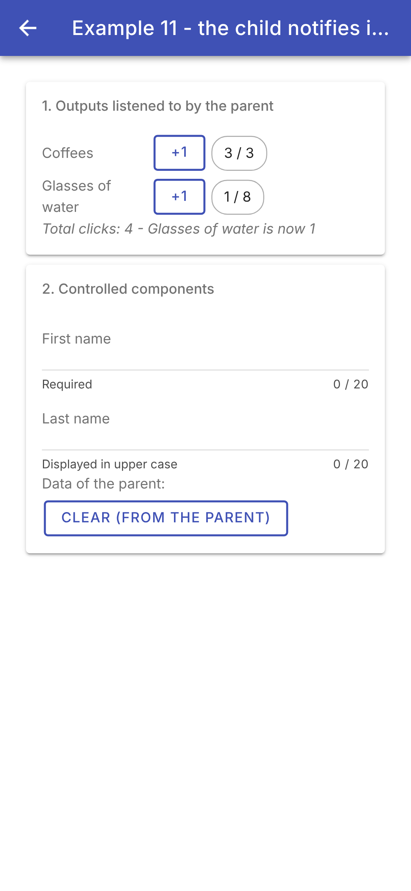

4. Komponenten
Eigene Komponenten zu schreiben ist das Herzstück der Arbeit mit [Angular] und [Ionic]: Ein gut geschriebener Bildschirm besteht aus kleinen Komponenten, jede mit eigenen Inputs, einem Template, einem Stil und gegebenenfalls einem Zustand. Dieses Kapitel zeigt, wie sie miteinander kommunizieren (Inputs und Outputs), wie sie zusammengesetzt werden (Content-Projektion, Templates), wie sie funktionieren (Lebenszyklus), wie sie Daten teilen, ohne sie hin- und herzureichen (Dependency Injection), und wie Verhalten wiederverwendet wird (Direktiven). Es ist das Gegenstück zum Kapitel „Widgets“ im Kurs zu [Flutter]: dieselben Beispiele, dieselben Bildschirme, aber mit den Werkzeugen von [Angular].
4.1.1. Datentyp
Die übergeordnete und die untergeordnete Komponente teilen sich einen Typ, der in einer eigenen Datei abgelegt ist:
| // =========================================================================
// src/app/ex10-component-inputs/doctor.ts - der Typ der Daten
// -------------------------------------------------------------------------
// Der Typ, den der Parent (Ex10Page) und das Kind (DoctorCard) gemeinsam nutzen.
// Ein TypeScript-Interface erzeugt keinen Code: Es wird nur vom
// Compiler verwendet, der prüft, dass jedes Objekt alle seine Felder hat.
// readonly: Wir ändern nie einen Arzt; wir bauen einen anderen.
// =========================================================================
export interface Doctor {
readonly id: number;
readonly title: string;
readonly firstName: string;
readonly lastName: string;
readonly specialty: string;
readonly available: boolean;
}
// eine Kopie, in der sich nur die Verfügbarkeit ändert: ...m kopiert alle Felder
// von m, dann ersetzt available sie
export function withAvailability(m: Doctor, available: boolean): Doctor {
return { ...m, available };
}
|
- Zeilen 10–17: ein [TypeScript]-Interface: die Form eines Arztes. Es erzeugt zur Laufzeit keinen Code; es wird nur vom Compiler verwendet, der prüft, dass jedes Objekt alle seine Felder mit dem richtigen Typ hat. [readonly] verbietet es, ein Feld nach der Erzeugung des Objekts zu ändern;
- Zeilen 21–23: eine Kopie, bei der sich nur die Verfügbarkeit ändert. [{ ...m, available }] kopiert alle Felder von [m] (der Dekompositionsoperator [...]), dann ersetzt das Feld [available] dasjenige in [m]: Das ursprüngliche Objekt ändert sich nie.
Wo [Dart] eine Klasse mit einem Konstruktor mit benannten Parametern definiert, verwendet [TypeScript] nur ein Interface und Objektliterale; [{ id: 1, title: 'Mme', ... }] hat bereits „benannte Parameter“.
4.1.2. Die untergeordnete Komponente
Die Komponente [DoctorCard] zeigt einen Arzt in einer Karte von [Ionic] an. Wie der Rest des Kurses ist sie in zwei Dateien geschrieben: der Klasse ([doctor-card.ts]) und ihrem Template ([doctor-card.html]).
| // =========================================================================
// src/app/ex10-component-inputs/doctor-card.ts - eine KIND-Komponente
// -------------------------------------------------------------------------
// Sie erhält ihre Daten von ihrem Parent über ihre INPUTS, deklariert
// durch die Funktionen input() und input.required(). Ihr Typ wird zur
// Kompilierzeit geprüft (strictTemplates): [doctor]="42" würde abgelehnt.
// - input.required<T>(): Der Parent MUSS diesen Input liefern;
// - input(false) : ein optionaler Input mit seinem Standardwert;
// - transform : eine Funktion, die den erhaltenen Wert umwandelt
// (booleanAttribute, numberAttribute: die von Angular, um
// compact oder rank="1" als einfache HTML-Attribute zu schreiben).
// Ein Input ist ein schreibgeschütztes SIGNAL: Wir lesen es, indem wir es aufrufen,
// doctor(), und der Bildschirm folgt seinen Änderungen.
//
// Goldene Regel: Eine Komponente ÄNDERT NIEMALS ihre Inputs (der Compiler
// verbietet es ohnehin: Ein input() hat weder set noch update). Die Daten
// fließen vom Parent zum Kind; um eine Änderung anzufordern,
// benachrichtigt das Kind seinen Parent mit einem Output (siehe Beispiel 11).
// =========================================================================
import { booleanAttribute, Component, computed, input, numberAttribute } from '@angular/core';
import { IonAvatar, IonCard, IonCardContent, IonLabel, IonText } from '@ionic/angular';
import { Doctor } from './doctor';
@Component({
selector: 'app-doctor-card',
imports: [IonCard, IonCardContent, IonAvatar, IonLabel, IonText],
templateUrl: './doctor-card.html',
// der "Stil" der Karte: Er gilt NUR für das Template dieser Komponente.
// Angular fügt den Tags des Templates ein eigenes Attribut hinzu und
// schreibt die Selektoren entsprechend um: Keine andere Komponente kann
// von diesen Regeln betroffen sein (Style-Kapselung)
styles: `
ion-card { margin: 6px 0; border: 2px solid transparent; border-radius: 12px; }
ion-card.available { border-color: #4caf50; }
ion-card-content { display: flex; align-items: center; gap: 12px; padding: 12px; }
ion-avatar {
width: 40px; height: 40px; display: flex; align-items: center; justify-content: center;
background: #087ea4; color: white; font-weight: bold;
}
h2 { margin: 0; font-size: 17px; color: var(--ion-text-color); }
`,
})
export class DoctorCard {
// die Inputs: ein erforderlicher doctor und rank, eine optionale kompakte Anzeige
readonly doctor = input.required<Doctor>();
// numberAttribute: rank="1" (ein String) wird zur Zahl 1
readonly rank = input.required({ transform: numberAttribute });
// booleanAttribute: Das Attribut allein (<app-doctor-card compact />) ist true
readonly compact = input(false, { transform: booleanAttribute });
// ein aus den Inputs berechneter Wert: Er folgt ihren Änderungen
readonly initials = computed(() => this.doctor().firstName[0] + this.doctor().lastName[0]);
}
|
- Zeile 26: der Selektor – der Tag-Name der Komponente. Die übergeordnete Komponente schreibt [<app-doctor-card ... />];
- Zeile 27: die Komponenten von [Ionic] , die vom Template verwendet werden. Eine Komponente kennt nur, was sie importiert;
- Zeilen 33–42: der „Stil“ der Karte. Diese Regeln gelten nur für das Template dieser Komponente. [Angular] fügt den Tags des Templates ein eindeutiges Attribut hinzu und schreibt die Selektoren entsprechend um (Style-Kapselung). Die Regel [ion-card { ... }] wirkt sich daher nicht auf andere Karten der Anwendung aus. Das entspricht den privaten Stilkonstanten des [Flutter]-Widgets oder den „CSS-Modulen“ von [React]: Der Stil einer Komponente wird bei ihr abgelegt und stört nichts anderes;
- Zeile 35: ein grüner Rahmen für die Klasse [available], die das Template auf die Karte eines verfügbaren Arztes anwendet;
- Zeilen 37–40: der Kreis mit den Initialen, in einem für die Karte spezifischen Blau;
- Zeile 46: ein erster, erforderlicher Input: [input.required<Doctor>()]. Die übergeordnete Komponente MUSS ihn bereitstellen; andernfalls lehnt der Compiler das Template ab. Sie muss außerdem einen [Doctor] übergeben: [[doctor]="42"] würde ebenfalls abgelehnt (Projektoption [strictTemplates]);
- Zeile 48: ein zweiter erforderlicher Input, der Rang, mit einer Transformation: [numberAttribute], eine Funktion von [Angular] , die den empfangenen Wert in eine Zahl umwandelt. Die übergeordnete Komponente kann dann entweder [rank="1"] (einen String, wie jedes HTML-Attribut) oder [[rank]="i + 1"] (eine Zahl) angeben;
- Zeile 50: ein optionaler Input mit seinem Standardwert ([false]) und einer weiteren Transformation: [booleanAttribute]. Das Attribut allein, [<app-doctor-card compact />], ist dann gleich [true], genau wie das Attribut [disabled] einer HTML-Schaltfläche;
- Zeile 53: ein aus den Inputs berechneter Wert. Ein Input ist ein schreibgeschütztes SIGNAL: Es wird durch Aufruf gelesen ([this.doctor()]), und [computed] berechnet die Initialen jedes Mal neu, wenn die übergeordnete Komponente einen anderen Arzt angibt.
| <!-- ======================================================================
doctor-card.html - das Template der Komponente DoctorCard
Es liest nur die Inputs der Komponente: doctor(), rank(), compact().
====================================================================== -->
<!-- [class.available]: die CSS-Klasse available (ein grüner Rand)
wird nur gesetzt, wenn der Arzt verfügbar ist -->
<ion-card [class.available]="doctor().available">
<ion-card-content>
<!-- eine farbige Scheibe mit den Initialen -->
<ion-avatar>{{ initials() }}</ion-avatar>
<ion-label>
<h2>{{ rank() }}. {{ doctor().title }} {{ doctor().firstName }} {{ doctor().lastName }}</h2>
<!-- die Fachrichtung existiert nur in der nicht kompakten Anzeige -->
@if (!compact()) {
<ion-text color="medium">{{ doctor().specialty }}</ion-text>
}
</ion-label>
</ion-card-content>
</ion-card>
|
- Zeile 8: [[class.available]="..."] setzt die CSS-Klasse [available] auf die Karte, wenn der Ausdruck wahr ist, und entfernt sie andernfalls;
- Zeile 11: ein [ion-avatar] (eine Scheibe) mit den Initialen;
- Zeile 13: der Rang und der Name des Arztes, aus den Inputs gelesen;
- Zeilen 15–17: Die Fachrichtung wird nur im nicht kompakten Modus angezeigt.
Goldene Regel: Eine Komponente ändert ihre Inputs niemals. Der Compiler verbietet dies tatsächlich: Ein mit [input()] erzeugtes Signal hat weder [set] noch [update]. Die Daten fließen von der übergeordneten zur untergeordneten Komponente; um eine Änderung anzufordern, benachrichtigt die untergeordnete Komponente ihre übergeordnete über einen Output (Beispiel 11). Ändert die übergeordnete Komponente ihre Daten, weist [Angular] den Inputs ihrer untergeordneten Komponenten die neuen Werte zu, und der Bildschirm wird entsprechend aktualisiert.
4.1.3. Die übergeordnete Komponente
| // =========================================================================
// src/app/ex10-component-inputs/ex10.page.ts - die PARENT-Komponente
// -------------------------------------------------------------------------
// Sie importiert die Komponente DoctorCard und verwendet sie, so oft
// nötig, wie jede Ionic-Komponente: Eine Komponente ist ein
// WIEDERVERWENDBARES Stück Oberfläche, mit eigenen Inputs, eigenem Template
// und eigenem Stil. Eigene Komponenten zu schreiben ist der Kern der Arbeit
// mit Angular: Ein gut geschriebener Bildschirm besteht aus kleinen Komponenten.
// =========================================================================
import { Component, signal } from '@angular/core';
import {
IonBackButton, IonButton, IonButtons, IonContent, IonHeader, IonText, IonTitle, IonToggle, IonToolbar,
} from '@ionic/angular';
import { DoctorCard } from './doctor-card';
import { withAvailability, Doctor } from './doctor';
@Component({
selector: 'app-ex10',
// wir importieren DoctorCard so, wie wir die Komponenten von Ionic importieren
imports: [
IonHeader, IonToolbar, IonButtons, IonBackButton, IonTitle, IonContent, IonToggle, IonButton, IonText,
DoctorCard,
],
templateUrl: './ex10.page.html',
})
export class Ex10Page {
// der Zustand des Parents: die Liste der Ärzte (die durch eine
// andere ersetzt, nie an Ort und Stelle geändert wird) und die kompakte Anzeige
readonly doctors = signal<Doctor[]>([
{ id: 1, title: 'Mme', firstName: 'Marie', lastName: 'PELISSIER', specialty: 'general practitioner', available: true },
{ id: 2, title: 'Mr', firstName: 'Paul', lastName: 'TATOU', specialty: 'pediatrician', available: false },
{ id: 3, title: 'Melle', firstName: 'Sophie', lastName: 'DUPONT', specialty: 'general practitioner', available: true },
]);
readonly compact = signal(false);
// der Parent ändert SEINE Daten: eine neue Liste, aus Kopien gebildet.
// Angular aktualisiert die Inputs der Karten, die ihnen folgen
toggleAvailability(): void {
this.doctors.update((list) => list.map((m) => withAvailability(m, !m.available)));
}
}
|
- Zeile 15: Die übergeordnete Komponente importiert die Komponente [DoctorCard] ...
- Zeilen 21–24: ... und deklariert sie in ihren [imports], genau wie die Komponenten von [Ionic]: Eine eigene Komponente wird genauso verwendet wie eine Framework-Komponente;
- Zeilen 30–35: der Zustand der übergeordneten Komponente: die Liste der Ärzte (ein Signal, dessen Wert durch eine andere Liste ersetzt, nie aber an Ort und Stelle verändert wird) und die kompakte Anzeige;
- Zeilen 39–41: Die übergeordnete Komponente ersetzt IHRE Daten durch eine neue Liste aus Kopien der Ärzte. [Angular] übergibt den Karten ihre neuen Inputs, und sie aktualisieren sich.
| <!-- ======================================================================
ex10.page.html - das Template des Parents: es verwendet <app-doctor-card>
====================================================================== -->
<ion-header>
<ion-toolbar color="primary">
<ion-buttons slot="start">
<ion-back-button defaultHref="/" />
</ion-buttons>
<ion-title>Example 10 - components and their inputs</ion-title>
</ion-toolbar>
</ion-header>
<ion-content class="ion-padding">
<!-- justify="space-between": die Beschriftung links, der Schalter rechts -->
<ion-toggle justify="space-between" [checked]="compact()" (ionChange)="compact.set($event.detail.checked)">
compact display
</ion-toggle>
<ion-button fill="outline" (click)="toggleAvailability()">Toggle the availabilities</ion-button>
<!-- eine Karte pro Arzt; jede Karte erhält IHRE Inputs über [input]="expression" -->
@for (m of doctors(); track m.id; let i = $index) {
<app-doctor-card [doctor]="m" [rank]="i + 1" [compact]="compact()" />
}
<p><ion-text color="medium">The same card, in its compact version, by fixing the input:</ion-text></p>
<!-- rank="1" und compact: einfache Attribute, umgewandelt durch die Transformationen
numberAttribute und booleanAttribute -->
<div style="width: 260px">
<app-doctor-card [doctor]="doctors()[0]" rank="1" compact />
</div>
</ion-content>
|
- Zeilen 16–18: ein Kippschalter von [Ionic] ([ion-toggle]), das Gegenstück zu [SwitchListTile] von [Flutter]. [justify="space-between"] platziert das Label links und den Schalter rechts; [(ionChange)] ist das Ereignis, das bei jeder Änderung ausgelöst wird, und [$event.detail.checked] ist sein neuer Zustand;
- Zeile 20: ein Button mit Rand ([fill="outline"]), das Gegenstück zu [OutlinedButton];
- Zeilen 23–25: eine Karte pro Arzt. [track m.id] teilt [Angular] mit, wie ein Arzt von einer Liste zur nächsten identifiziert wird (das Gegenstück zum Schlüssel [ValueKey(m.id)] von [Flutter]); [let i = $index] legt den Rang des Elements fest. Jede Karte erhält IHRE Inputs mit der Syntax [[input]="expression"]: Der Ausdruck wird im Parent ausgewertet, und sein Wert wird an den Input des Childs übergeben;
- Zeile 31: dieselbe Karte in einer kompakten Version, in einem 260 Pixel breiten Kasten. [rank="1"] und [compact] werden als einfache HTML-Attribute geschrieben: Die Transformationen [numberAttribute] und [booleanAttribute] des Childs wandeln sie in [1] und [true] um.
Zunächst und dann in der kompakten Ansicht ist die Verfügbarkeit umgekehrt:
Ist das eine Methode, die ein Template-Fragment erzeugt, oder eine echte Komponente? [Angular] lässt wenig Spielraum: Ein wiederverwendbares Oberflächenfragment ist eine Komponente. Das ist gut so: Sie hat einen Namen, ihre Inputs sind typisiert und werden zur Kompilierzeit geprüft, ihr Styling ist gekapselt, und sie lässt sich anderswo wiederverwenden. Während [Flutter] Daten über die Konstruktorparameter eines Widgets übergibt, übergibt [Angular] sie über Inputs, die Signale sind: Das Child muss nichts tun, um deren Änderungen zu verfolgen.
4.2. Beispiel 11: Das Child benachrichtigt seinen Parent
Daten fließen über Inputs nach unten; Informationen fließen über Outputs wieder nach oben: Das sind Ereignisse, die das Child auslöst und auf die der Parent lauscht, genau wie auf das Ereignis [(click)] eines Buttons.
4.2.1. „Ereignisse“ des Childs
| // =========================================================================
// src/app/ex11-lifting-state-up/counter.ts
// -------------------------------------------------------------------------
// Ein Kind, das seinen Parent BENACHRICHTIGT: Es deklariert OUTPUTS
// mit der Funktion output() und "emittiert" sie, wenn etwas geschieht.
// Der Parent abonniert sie in seinem Template, wie das Ereignis (click) einer
// Schaltfläche:
// <app-counter label="Coffees" [max]="3" (incremented)="..." (limit)="..." />
// - output<number>(): ein Ereignis, das eine Zahl trägt ($event);
// - output<void>() : ein Ereignis ohne Daten.
// =========================================================================
import { Component, input, output, signal } from '@angular/core';
import { IonButton, IonChip } from '@ionic/angular';
@Component({
selector: 'app-counter',
imports: [IonButton, IonChip],
templateUrl: './counter.html',
styles: `
:host { display: flex; align-items: center; }
.label { width: 110px; }
`,
})
export class Counter {
// die Inputs (was nach unten fließt) ...
readonly label = input.required<string>();
readonly max = input.required<number>();
// ... und die Outputs (was nach oben fließt)
readonly incremented = output<number>(); // mit dem neuen Wert
readonly limit = output<void>(); // ohne Daten
// der für diesen Zähler SPEZIFISCHE Zustand: Jeder Counter hat seinen eigenen
readonly value = signal(0);
plus(): void {
if (this.value() >= this.max()) {
// emit(): benachrichtigt alle, die den Output abhören
this.limit.emit();
return;
}
this.value.update((v) => v + 1);
// wir BENACHRICHTIGEN den Parent und übergeben ihm den neuen Wert
this.incremented.emit(this.value());
}
}
|
- Zeilen 20–23: der Stil der Komponente. [:host] bezeichnet das Tag der Komponente selbst ([<app-counter>]), dessen Kinder in einer einzigen Zeile ausgerichtet werden ([display: flex]);
- Zeilen 27–28: die Inputs: was vom Parent nach unten fließt;
- Zeilen 30–31: die Outputs: was zum Parent zurückfließt. [output<number>()] deklariert ein Ereignis, das eine Zahl transportiert; [output<void>()] deklariert ein Ereignis ohne Daten. Sie sind die Gegenstücke zu den Parametern [onIncrement] (ein [ValueChanged<int>]) und [onLimit] (ein [VoidCallback]) des [Flutter]-Zählers: Statt Funktionen vom Parent zu erhalten, löst das Child Ereignisse aus, die der Parent abonniert;
- Zeile 34: der Zustand, der SPEZIFISCH für diesen Zähler gilt; jeder [Counter] hat seinen eigenen;
- Zeilen 36–45: Wird das Maximum überschritten, benachrichtigt der Zähler seinen Parent ([this.limit.emit()]); andernfalls ändert er seinen Zustand und benachrichtigt dann seinen Parent, indem er den neuen Wert übermittelt ([this.incremented.emit(...)]). Das Signal hat seinen neuen Wert bereits, wenn es in Zeile 44 gelesen wird.
| <!-- ======================================================================
counter.html - ein Label, ein Button +1 und der Wert des Zählers
====================================================================== -->
<span class="label">{{ label() }}</span>
<ion-button fill="outline" (click)="plus()">+1</ion-button>
<ion-chip [outline]="true">{{ value() }} / {{ max() }}</ion-chip>
|
- Zeilen 4–6: ein Label, ein Button ([+1]) und ein Chip ([ion-chip]), der den Wert und das Maximum anzeigt.
4.2.2. Eine kontrollierte Komponente
Ein benutzerdefiniertes Formularfeld (Label + Feld + Tooltip + Zeichenzähler), das als kontrolliertes Feld funktioniert: Der Wert gehört dem Parent, der ihn an das Feld übergibt und über jeden Tastendruck benachrichtigt wird. [Angular] bietet dafür eine fertige Funktion: [model()].
| // =========================================================================
// src/app/ex11-lifting-state-up/text-field.ts - eine KONTROLLIERTE Komponente
// -------------------------------------------------------------------------
// Ein selbstgeschriebenes Formularfeld (Beschriftung + Feld + Hilfe + Zeichenzähler),
// das wie ein kontrolliertes Feld verwendet wird, mit einem
// ZWEI-WEGE-Binding:
// <app-text-field [(value)]="firstName" label="First name" [max]="20" />
// Der Wert gehört dem PARENT (seinem Signal firstName). model() deklariert
// auf einmal einen Input (value) und einen Output (valueChange):
// - der Parent übergibt seinen Wert an das Feld: [value]="firstName()";
// - das Feld ändert den Wert: value.set(...), was valueChange emittiert;
// - die Syntax [(value)]="firstName" (die "Banane in der Box") schreibt
// beides auf einmal: Das Signal des Parents folgt der Eingabe.
// Ändert der Parent den Wert selbst (Schaltfläche Löschen), folgt das Feld,
// ohne dass mehr zu schreiben ist: Ein Input ist ein Signal.
//
// Die Fehlermeldung (errorText): Ionic zeigt sie nur an, wenn das Feld die
// Klassen ion-invalid und ion-touched trägt, die es selbst aus dem Zustand
// des Form-Controls von Angular (ngModel, siehe Beispiele 07 und 08) kopiert.
// Wir gehen daher über ngModel und setzen den Fehler seines Controls.
// =========================================================================
import { Component, computed, effect, input, model, viewChild } from '@angular/core';
import { FormsModule, NgModel } from '@angular/forms';
import { IonInput } from '@ionic/angular';
@Component({
selector: 'app-text-field',
imports: [IonInput, FormsModule],
templateUrl: './text-field.html',
})
export class TextField {
// model.required: ein erforderlicher Input ... den die Komponente ändern kann
readonly value = model.required<string>();
readonly label = input.required<string>();
readonly max = input.required<number>();
readonly help = input('');
// ist das Feld voll?
readonly full = computed(() => this.value().length === this.max());
// das ngModel des Templates und das Form-Control, das es verwaltet
private readonly model = viewChild.required(NgModel);
constructor() {
// ein Effect: Er wird jedes Mal erneut ausgeführt, wenn sich full() ändert. Er erklärt
// das Control als "touched" und "fehlerhaft", wenn das Feld voll ist
effect(() => {
const control = this.model().control;
control.markAsTouched();
control.setErrors(this.full() ? { full: true } : null);
});
}
}
|
- Zeile 34: [model.required<string>()] deklariert sowohl einen Input ([value]) als auch einen Output ([valueChange]). Das ist ein Signal, das die Komponente selbst ändern kann: [this.value.set('...')] ändert seinen Wert UND löst [valueChange] aus, was den Parent benachrichtigt. Der Parent schreibt [[(value)]="firstName"] (die „Banane in der Box“): Sein Signal [firstName] wird an das Feld übergeben, und es folgt dem Input;
- Zeilen 35–37: die übrigen Inputs: das Label, die maximale Länge und ein optionaler Hilfetext (standardmäßig leer);
- Zeile 40: Ist das Feld voll? Ein aus dem Wert und dem Maximum berechneter Wert;
- Zeile 43: [viewChild.required(NgModel)]: die Template-Direktive [ngModel] (das Formularsteuerelement von [Angular], gesehen in den Beispielen 07 und 08) in Form eines Signals;
- Zeilen 48–52: ein EFFEKT: eine Funktion, die jedes Mal erneut ausgeführt wird, wenn sich ein von ihr beobachtetes Signal ändert (hier [full()]). Er markiert das Steuerelement als „touched“ und setzt es auf einen Fehler, wenn das Feld voll ist. Warum der Umweg über die Formularprüfung? Weil [Ionic] die Fehlermeldung eines [ion-input] ([errorText]) nur anzeigt, wenn das Feld die CSS-Klassen [ion-invalid] und [ion-touched] hat; und mit [Angular] erzeugt dieses diese Klassen selbst anhand des Zustands des Formularsteuerelements (seine Klassen [ng-invalid] und [ng-touched]). Sie manuell zu setzen, wäre sinnlos: [Ionic] würde sie beim nächsten Tastendruck wieder entfernen.
| <!-- ======================================================================
text-field.html - ein ion-input, gesteuert vom Wert des übergeordneten Elements
====================================================================== -->
<!-- [(ngModel)]="value": die Zwei-Wege-Bindung zwischen dem Feld und dem Signal
value (dem model() der Komponente): Jeder Tastendruck führt value.set(...) aus,
was valueChange an das übergeordnete Element sendet; ein neuer Wert des übergeordneten Elements
wird im Feld angezeigt.
[maxlength]: Das Feld lehnt die überzähligen Zeichen ab;
[counter]: Es zeigt einen Zähler an ("5 / 20");
errorText ersetzt helperText (und das Feld wird rot), wenn das Control einen Fehler hat -->
<ion-input
[(ngModel)]="value"
[label]="label()"
labelPlacement="floating"
[maxlength]="max()"
[counter]="true"
[helperText]="help()"
errorText="Maximum length reached"
/>
|
- Zeile 13: [[(ngModel)]="value"]: die bidirektionale Verknüpfung zwischen dem Feld und dem Signal [value]. [ngModel] akzeptiert ein beschreibbares Signal: Jeder Tastendruck löst [value.set(...)] aus, was den Parent benachrichtigt; ein neuer Wert vom Parent wird im Feld angezeigt;
- Zeilen 14–15: das Label, das über dem Feld „schwebt“, wenn dieses einen Wert hat oder den Fokus besitzt;
- Zeile 16: das Feld lehnt überzählige Zeichen ab;
- Zeile 17: es zeigt einen Zähler an („5 / 20“);
- Zeile 18: einen Tooltip unterhalb des Feldes;
- Zeile 19: die Meldung, die den Tooltip ersetzt und das Feld rot färbt, wenn sich das Steuerelement im Fehlerzustand befindet (das Feld ist voll).
Das [Flutter]-Feld hatte eine besondere Schwierigkeit: Ein [TextField] speichert seinen Text in einem Controller, der in [didUpdateWidget] aktuell gehalten werden musste, sobald der Parent den Wert selbst änderte (über den Button „Clear“). Nichts dergleichen hier: Der Wert des Parents kommt über ein Signal an, und [ngModel] kopiert ihn in das Feld zurück, sobald er sich ändert.
4.2.3. Der Parent
| // =========================================================================
// src/app/ex11-lifting-state-up/ex11.page.ts - der Parent hört auf seine Kinder
// -------------------------------------------------------------------------
// Die Daten fließen nach unten (Inputs); die Information fließt nach oben über die
// OUTPUTS der Kinder:
// 1. "Ereignisse" des Kinds: (incremented), (limit);
// 2. eine kontrollierte Komponente: [(value)], wie das [(ngModel)] eines Felds.
// Der Zustand bleibt Eigentum des Parents, der ihn selbst ändern kann (Clear).
// =========================================================================
import { Component, signal } from '@angular/core';
import {
IonBackButton, IonButton, IonButtons, IonCard, IonCardContent, IonCardHeader, IonCardSubtitle, IonContent,
IonHeader, IonTitle, IonToolbar,
} from '@ionic/angular';
import { TextField } from './text-field';
import { Counter } from './counter';
@Component({
selector: 'app-ex11',
imports: [
IonHeader, IonToolbar, IonButtons, IonBackButton, IonTitle, IonContent, IonCard, IonCardHeader,
IonCardSubtitle, IonCardContent, IonButton, Counter, TextField,
],
templateUrl: './ex11.page.html',
})
export class Ex11Page {
readonly total = signal(0);
readonly message = signal('');
readonly firstName = signal('Marie');
readonly lastName = signal('PELISSIER');
// die von einem Zähler aufgerufene Methode: Sie erhält den Wert, den er übergibt
onIncrement(label: string, value: number): void {
this.total.update((t) => t + 1);
this.message.set(`${label} is now ${value}`);
}
// der Parent ändert seine Daten: Die Felder folgen
clear(): void {
this.firstName.set('');
this.lastName.set('');
}
}
|
- Zeilen 30–31: Die Werte beider Felder gehören dem Parent: zwei Signale;
- Zeilen 34–37: die Methode, die aufgerufen wird, wenn ein Zähler [incremented] auslöst: Sie erhält den Wert, den er übermittelt;
- Zeilen 40–43: Der Parent ändert den Wert selbst: Die Felder werden geleert.
| <!-- ======================================================================
ex11.page.html - das Template des übergeordneten Elements: Es lauscht auf die Outputs der Kinder
====================================================================== -->
<ion-header>
<ion-toolbar color="primary">
<ion-buttons slot="start">
<ion-back-button defaultHref="/" />
</ion-buttons>
<ion-title>Example 11 - the child notifies its parent</ion-title>
</ion-toolbar>
</ion-header>
<ion-content class="ion-padding">
<ion-card>
<ion-card-header>
<ion-card-subtitle>1. Outputs listened to by the parent</ion-card-subtitle>
</ion-card-header>
<ion-card-content>
<!-- (output)="statement": $event sind die vom Kind emittierten Daten -->
<app-counter
label="Coffees"
[max]="3"
(incremented)="onIncrement('Coffees', $event)"
(limit)="message.set('No more than 3 coffees!')"
/>
<app-counter
label="Glasses of water"
[max]="8"
(incremented)="onIncrement('Glasses of water', $event)"
(limit)="message.set('Enough drinking.')"
/>
<p><em>Total clicks: {{ total() }} - {{ message() }}</em></p>
</ion-card-content>
</ion-card>
<ion-card>
<ion-card-header>
<ion-card-subtitle>2. Controlled components</ion-card-subtitle>
</ion-card-header>
<ion-card-content>
<!-- [(value)]="firstName": das Two-Way-Binding mit einem Signal des Parents -->
<app-text-field [(value)]="firstName" label="First name" [max]="20" help="Required" />
<app-text-field [(value)]="lastName" label="Last name" [max]="20" help="Displayed in upper case" />
<!-- die Daten des Parents, die der Eingabe folgen -->
<p>Data of the parent: <strong>{{ firstName() }} {{ lastName().toUpperCase() }}</strong></p>
<ion-button fill="outline" (click)="clear()">Clear (from the parent)</ion-button>
</ion-card-content>
</ion-card>
</ion-content>
|
- Zeilen 21–26: ein Zähler, seine Inputs und seine Outputs. [(incremented)="onIncrement('Coffees', $event)"]: Bei jeder Übermittlung führt [Angular] die Anweisung aus, wobei [$event] die vom Child übermittelten Daten sind; der Parent fügt ihnen sein eigenes Argument (das Label) hinzu. [(limit)] führt direkt eine Anweisung aus: [message.set(...)];
- Zeile 30: der zweite Zähler, auf dessen Outputs auf dieselbe Weise gelauscht wird, mit seinem eigenen Label („Glasses of water“);
- Zeilen 43–44: zwei kontrollierte Felder, über [firstName] und [lastName] mit den Signalen des Parents verknüpft, und zwar via [[(value)]]. Der Parent übergibt das Signal selbst ([firstName], ohne Klammern): [Angular] liest und ändert es;
- Zeile 46: die Daten des Parents, die der Eingabe folgen;
- Zeile 47: Der Parent ändert den Wert selbst: Die Felder werden geleert.
Drücken Sie den ersten Zähler viermal (beim vierten Mal gibt er [limit] aus), den zweiten einmal und füllen Sie den Namen aus; leeren Sie dann die Felder vom Parent aus:
 |  |
Inputs und Outputs – das ist der gesamte Dialog zwischen einem Parent und seinen Children in [Angular]. [Flutter] übergab Funktionen als Parameter ([onIncrement: (v) => ...]), so wie [React] Funktionen als „Props“ übergibt; [Angular] bevorzugt Ereignisse, auf die mit derselben Syntax gelauscht wird wie auf die des Browsers ([(click)], [(incremented)]). Und das bidirektionale Binding [[( )]] – das [Flutter] und [React] manuell schreiben (ein Wert + eine Funktion [onChanged]) – ist hier eine Template-Syntax.
4.3. Beispiel 12: Komposition
4.3.1. Eine Karte
Die Inputs einer Komponente übertragen Daten ... Der Inhalt selbst wird zwischen ihren Tags geschrieben, wie bei einem HTML-Tag: [<app-card>...here...</app-card>]. Die Komponente platziert ihn in ihrem Template dort, wo sie möchte, mithilfe des Tags [<ng-content>]: Das ist Content Projection. [Ionic] nutzt sie überall: Der Text eines [ion-button], der Inhalt einer [ion-card] oder eines [ion-item] wird projiziert. Das ist das Gegenstück zu den Parametern [child], [title] oder [body] der [Flutter]-Widgets, die andere Widgets erhalten.
| // =========================================================================
// src/app/ex12-composition/card.ts - ein wiederverwendbares TEMPLATE
// -------------------------------------------------------------------------
// Die Inputs einer Komponente übergeben DATEN ... Der INHALT dagegen
// wird zwischen ihren Tags geschrieben, wie bei einem HTML-Tag, und die Komponente
// platziert ihn, wo sie will, mit dem Tag <ng-content>: Das ist die
// Inhaltsprojektion. Ionic verwendet sie überall: den Inhalt eines <ion-button>,
// einer <ion-card>, eines <ion-item> ...
// - <ng-content />: der "Haupt"-Inhalt (alles, was nicht woanders steht);
// - <ng-content select="[header]">: ein anderer Platz (ein "Slot"),
// für die Tags des Parents, die das Attribut header tragen; was wir
// zwischen <ng-content> und </ng-content> schreiben, ist der Standardinhalt;
// - der Footer ist optional: Die Karte sucht ihn in ihrem Inhalt
// (contentChild) und zeigt ihn nur an, wenn er vorhanden ist.
// Die Karte legt den Rahmen fest (Rand, Header, Footer), der Parent liefert, was
// hineingehört.
// =========================================================================
import { Component, computed, contentChild, Directive, input } from '@angular/core';
// eine MARKIERUNG: eine Direktive ohne Code, vom Parent an seinen Footer gesetzt
// (<span footer>...</span>), damit die Karte ihn finden kann
@Directive({ selector: '[footer]' })
export class CardFooter {}
@Component({
selector: 'app-card',
templateUrl: './card.html',
styles: `
:host { display: block; margin: 0 0 12px; border: 1px solid var(--bg); border-radius: 8px; overflow: hidden; }
.header { background: var(--bg); padding: 10px; font-weight: bold; }
.header.colored { color: white; }
.body { padding: 10px; }
.footer { background: #f5f5f5; padding: 8px; color: #757575; font-size: 12px; }
`,
// host: Bindings am Tag <app-card> selbst. Hier eine
// CSS-Variable (--bg), die von den obigen Regeln gelesen wird
host: { '[style.--bg]': 'background()' },
})
export class Card {
// eine Ionic-Farbe, optional ('primary', 'success' ...): standardmäßig undefined
readonly color = input<string>();
readonly background = computed(() => (this.color() ? `var(--ion-color-${this.color()})` : '#e0e0e0'));
// contentChild: das erste Element des INHALTS, das die Direktive
// CardFooter trägt; ein Signal, undefined, wenn es keines gibt
readonly footer = contentChild(CardFooter);
}
|
- Zeilen 23–24: eine MARKIERUNG – eine Direktive (eine Klasse ohne Template; siehe Beispiel 15), die nichts tut. Der Parent setzt sie auf seinen Footer, [<span footer>...</span>], damit die Karte sie in ihrem Inhalt auffinden kann;
- Zeilen 29–35: der Stil der Karte. Die Farben stammen aus einer CSS-Variablen, [--bg];
- Zeile 38: [host]: Bindings auf dem Tag der Komponente selbst ([<app-card>]). Hier wird der CSS-Variablen [--bg] der berechnete Wert [background()] zugewiesen;
- Zeile 42: ein optionaler Input ohne Standardwert: [undefined] , wenn der Parent ihn nicht angibt. Wie den Komponenten von [Ionic] wird der Karte der Name einer Farbe aus dem Theme übergeben ([primary], [success] ...);
- Zeile 43: die Hintergrundfarbe: die [Ionic]-CSS-Variable , die dieser Farbe entspricht ([var(--ion-color-primary)] ...), oder Hellgrau;
- Zeile 47: [contentChild(CardFooter)] durchsucht den vom Parent bereitgestellten INHALT nach dem ersten Element, das die Direktive [CardFooter] enthält. Das ist ein Signal: [undefined], wenn keines gefunden wird.
| <!-- ======================================================================
card.html - der Rahmen der Karte und drei Plätze für den Inhalt
====================================================================== -->
<!-- der Header: Die Styles von .header (fett, weiß auf einer Farbe)
gelten durch Vererbung für ALLE vom übergeordneten Element gelieferten Texte -->
<div class="header" [class.colored]="color()">
<ng-content select="[header]">Untitled</ng-content>
</div>
<!-- der vom Parent gelieferte Hauptinhalt -->
<div class="body">
<ng-content />
</div>
<!-- kein Footer geliefert: überhaupt kein Footer -->
@if (footer()) {
<div class="footer">
<ng-content select="[footer]" />
</div>
}
|
- Zeilen 7–9: der Header. [<ng-content select="[header]">] ist ein Slot: Er nimmt die Inhalts-Tags auf, die dem CSS-Selektor [[header]] entsprechen, das heißt jene, die das Attribut [header] tragen. Der Text zwischen [<ng-content>] und [</ng-content>] („Untitled“) ist der Standardinhalt, der angezeigt wird, wenn der Parent keinen Header liefert. Die Stile von [.header] (fett, weißer Text auf farbigem Hintergrund) werden durch Vererbung auf den gesamten vom Parent gelieferten Text angewendet: Das ist das Gegenstück zu [DefaultTextStyle] in [Flutter];
- Zeilen 12–14: der Hauptinhalt: [<ng-content />] nimmt ohne Selektor alles auf, was an keiner anderen Stelle gelandet ist;
- Zeilen 17–21: kein Footer angegeben: überhaupt kein Footer (weder sein Rand noch sein grauer Hintergrund).
4.3.2. Eine generische Tabelle
| // =========================================================================
// src/app/ex12-composition/data-table.ts - eine GENERISCHE Tabelle
// -------------------------------------------------------------------------
// DataTable<T> ist eine generische Komponente: Sie zeigt Zeilen
// beliebigen Typs T an. Sie weiß, wie man die Zeilen durchläuft, aber nicht, wie man
// EINE Zelle anzeigt: Das sagt ihr der Parent, indem er ihr
// in ihrem Inhalt ein TEMPLATE (<ng-template>) pro Spalte übergibt:
// <app-data-table [rows]="slots">
// <ng-template column="Slot" let-c>{{ c.time }}</ng-template>
// </app-data-table>
// Ein <ng-template> wird nicht dort angezeigt, wo es geschrieben steht: Es ist ein Stück
// Template "in Wartestellung", das die Tabelle selbst anzeigt, so oft
// wie nötig (ngTemplateOutlet), und dem sie seine Daten gibt (die Zeile,
// ihren Rang): let-c erhält die Zeile, let-i="index" ihren Rang.
// Der Inhalt wird vom Parent geliefert, verwendet aber Daten, die
// dem Kind gehören: Es ist das Gegenstück zu den "Buildern" von Flutter
// (ListView.builder) und den "Render Props" von React.
// =========================================================================
import { NgTemplateOutlet } from '@angular/common';
import { Component, contentChildren, Directive, inject, input, TemplateRef } from '@angular/core';
// die Daten, die ein Zell-Template erhält: $implicit ist der Wert von
// let-c (ohne Namen), index der von let-i="index"
export interface CellContext<T> {
$implicit: T;
index: number;
}
// eine SPALTE: eine Direktive, die an ein <ng-template> gesetzt wird. Sie trägt den Titel
// der Spalte und gibt Zugriff auf das Template (TemplateRef), an dem sie gesetzt ist
@Directive({ selector: 'ng-template[column]' })
export class Column {
readonly title = input.required<string>({ alias: 'column' });
readonly template = inject<TemplateRef<CellContext<unknown>>>(TemplateRef);
}
@Component({
selector: 'app-data-table',
imports: [NgTemplateOutlet],
templateUrl: './data-table.html',
styles: `
table { width: 100%; border-collapse: collapse; }
th { text-align: left; padding: 6px; border-bottom: 1px solid #ccc; }
td { padding: 6px; border-top: 1px solid #e0e0e0; }
tbody tr:first-child td { border-top: none; }
.empty { color: #9e9e9e; padding: 6px; }
`,
})
export class DataTable<T> {
// T wird aus dem Typ von [rows] abgeleitet: DataTable<Slot> ...
readonly rows = input.required<readonly T[]>();
// contentChildren: ALLE Spalten des Inhalts, der Reihe nach (ein Signal)
readonly columns = contentChildren(Column);
}
|
- Zeilen 25–28: die Daten, die ein Zellen-Template von der Tabelle erhält: die Zeile ([$implicit], der Standardwert) und ihre Spalte ([index]);
- Zeilen 32–36: eine SPALTE – eine Direktive, die nur auf ein [<ng-template>] angewendet wird (ihr Selektor, [ng-template[column]]). Ein [<ng-template>] wird nicht dort angezeigt, wo es geschrieben steht: Es ist ein „wartendes“ Template-Fragment – ein TEMPLATE –, das jemand anderes so oft wie nötig anzeigt. Die Direktive trägt den Spaltentitel (den Input [title], der über den Alias den Namen der Direktive annimmt: [column="Slot"]) und ermöglicht den Zugriff auf das Template, auf dem sie platziert ist ([inject(TemplateRef)]);
- Zeile 50: [DataTable<T>] ist eine generische Komponente: Sie zeigt Zeilen beliebigen [T]-Typs an. Sie weiß, wie man Zeilen durchläuft, aber nicht, wie eine Zelle darzustellen ist – das teilt ihr die Parent-Komponente mit, indem sie für jede Spalte ein Template übergibt. Das ist das Prinzip der „Builder“ in [Flutter] ([ListView.builder], die Funktion [cells] aus dem [Flutter]-Beispiel) und der „Render Props“ in [React]: Der Inhalt wird vom Parent geliefert, verwendet aber Daten, die dem Child gehören (die Zeile, ihren Rang);
- Zeile 52: die Zeilen. [T] wird aus dem Typ des vom Parent gelieferten Werts abgeleitet: Mit [[rows]="slots"] ist es eine [DataTable<Slot>];
- Zeile 54: [contentChildren(Column)]: ALLE Spalten des Inhalts, in der Reihenfolge, in der der Parent sie geschrieben hat (ein Signal, das ein Array enthält).
| <!-- ======================================================================
data-table.html - eine Titelzeile, dann eine Zeile pro Element
====================================================================== -->
<table>
<thead>
<tr>
@for (col of columns(); track col) {
<th>{{ col.title() }}</th>
}
</tr>
</thead>
<tbody>
@for (row of rows(); track $index; let i = $index) {
<tr>
@for (col of columns(); track col) {
<!-- die Zelle DIESER Zeile und dieser Spalte, vom Template des
übergeordneten Elements gebildet, mit seinen Daten (context) -->
<td>
<ng-container *ngTemplateOutlet="col.template; context: { $implicit: row, index: i }" />
</td>
}
</tr>
}
</tbody>
</table>
<!-- keine Zeile: der vom Parent gelieferte Inhalt [empty] oder ein Standardtext -->
@if (rows().length === 0) {
<div class="empty">
<ng-content select="[empty]">No data.</ng-content>
</div>
}
|
- Zeilen 6–10: eine Kopfzeile, eine Überschrift pro Spalte;
- Zeilen 13–23: eine Tabellenzeile pro Element und in jeder Zeile eine Zelle pro Spalte;
- Zeile 19: [*ngTemplateOutlet] zeigt das Spalten-Template ([col.template]) an dieser Stelle an und versorgt es mit seinen Daten ([context]): der Zeile und ihrem Rang. [<ng-container>] ist ein Tag, das auf der Seite nicht existiert: Es dient allein dazu, die Direktive zu tragen;
- Zeilen 27–31: keine Zeile – der vom Parent gelieferte Inhalt [[empty]] oder ein Standardtext. Die Spaltenüberschriften bleiben angezeigt.
Die Tabelle selbst erzeugt die Zellen ([<td>]) um die Templates herum: Deren Stil (Abstände, Rahmen) ist daher der der Tabelle, und das Parent-Element muss nur den Inhalt in ihnen liefern.
4.3.3. Der Parent
| // =========================================================================
// src/app/ex12-composition/ex12.page.ts - die Templates Card und DataTable verwenden
// =========================================================================
import { Component } from '@angular/core';
import {
IonBackButton, IonButtons, IonChip, IonContent, IonHeader, IonIcon, IonTitle, IonToolbar,
} from '@ionic/angular';
import { addIcons } from 'ionicons';
import { calendar } from 'ionicons/icons';
import { Card, CardFooter } from './card';
import { Column, DataTable } from './data-table';
// ein Slot: ein inline geschriebener Typ (kein Interface nötig, das anderswo benannt wird)
type Slot = { id: number; time: string; patient: string | null };
const slots: Slot[] = [
{ id: 1, time: '8:00 - 8:20', patient: null },
{ id: 2, time: '8:20 - 8:40', patient: 'Mme Alice DURAND' },
{ id: 3, time: '8:40 - 9:00', patient: null },
];
@Component({
selector: 'app-ex12',
imports: [
IonHeader, IonToolbar, IonButtons, IonBackButton, IonTitle, IonContent, IonIcon, IonChip,
Card, CardFooter, DataTable, Column,
],
templateUrl: './ex12.page.html',
})
export class Ex12Page {
readonly slots = slots;
readonly free = slots.filter((c) => c.patient === null).length;
// eine leere Liste mit explizit angegebenem Typ (nichts erlaubt es, ihn zu erraten)
readonly persons: { id: number; name: string }[] = [];
constructor() {
addIcons({ calendar });
}
}
|
- Zeile 15: ein Zeitfenster – ein Inline-Typ. [string | null]: ein Patient oder niemand;
- Zeile 27: Der Parent importiert die Komponenten [Card] und [DataTable] sowie die Direktiven [CardFooter] und [Column], die er in seinem Template verwendet;
- Zeile 33: die Anzahl der verfügbaren Zeitfenster;
- Zeile 35: eine leere Liste, deren Typ ausdrücklich angegeben ist (anders lässt er sich nicht ableiten).
| <!-- ======================================================================
ex12.page.html - Karten und was wir hineinlegen
====================================================================== -->
<ion-header>
<ion-toolbar color="primary">
<ion-buttons slot="start">
<ion-back-button defaultHref="/" />
</ion-buttons>
<ion-title>Example 12 - composition</ion-title>
</ion-toolbar>
</ion-header>
<ion-content class="ion-padding">
<!-- der Header (Attribut header) und der Footer (Attribut footer) kommen an ihre
Plätze; der Rest ist der Hauptinhalt -->
<app-card color="primary">
<div header style="display: flex; align-items: center; gap: 8px">
<ion-icon name="calendar" />
<span>Schedule of Mme PELISSIER</span>
</div>
<span footer>{{ free }} free slot(s)</span>
<!-- der Hauptinhalt: eine Tabelle von Slots, ein Template pro Spalte -->
<app-data-table [rows]="slots">
<!-- let-i="index": der Rang der Zeile -->
<ng-template column="#" let-i="index">{{ i + 1 }}</ng-template>
<!-- let-c: die Zeile selbst -->
<ng-template column="Slot" let-c>{{ c.time }}</ng-template>
<ng-template column="Status" let-c>
@if (c.patient) {
<ion-chip [outline]="true">{{ c.patient }}</ion-chip>
} @else {
<ion-chip color="success">Free</ion-chip>
}
</ng-template>
</app-data-table>
</app-card>
<app-card color="success">
<span header>A card without a footer</span>
The footer is not provided: the card does not display it.
</app-card>
<!-- kein Header geliefert: der Standardinhalt, "Untitled" -->
<app-card>
<app-data-table [rows]="persons">
<ng-template column="Name" let-p>{{ p.name }}</ng-template>
<span empty>Nobody for now.</span>
</app-data-table>
</app-card>
</ion-content>
|
- Zeilen 17–37: eine Karte mit der Farbe [primary];
- Zeilen 18–21: ihr Header: ein Tag mit dem Attribut [header], das daher in den Slot [select="[header]"] der Karte gelangt; es enthält ein Symbol und Text;
- Zeile 22: ihr Footer, der das Attribut [footer] (und damit die Direktive [CardFooter]) besitzt;
- Zeilen 24–36: der Hauptinhalt: eine Tabelle von Zeitfenstern mit einem Template pro Spalte. [let-c] deklariert eine Template-Variable, der der Wert [$implicit] aus dem Kontext (die Zeile) zugewiesen wird; [let-i="index"] ist eine Variable, die den Wert [index] (den Rang) erhält. Das Template der Spalte „Status“ enthält ein [@if] und Komponenten von [Ionic] ([ion-chip]): Ein Template ist ein Template wie jedes andere;
- Zeilen 39–42: eine Karte ohne Footer;
- Zeilen 45–50: eine Karte ohne Header (der Standardinhalt „Untitled“); ihre Tabelle ist leer und zeigt den vom Parent gelieferten Inhalt [empty] an.
Die Template-Variablen ([c], [p]) haben hier den Typ [any]: [Angular] verknüpft den Typ eines [<ng-template>] nicht mit dem [T] der Tabelle, die es anzeigt (wir könnten dabei nachhelfen, indem wir in der Direktive eine Methode [ngTemplateContextGuard] schreiben, wie es [NgFor] tut; das geht über den Rahmen dieses Beispiels hinaus).

Die Karte legt den Rahmen fest (Rand, Header, Footer); der Parent liefert den Inhalt darin. So sind die Komponenten von [Ionic] selbst aufgebaut: [ion-card] erhält ihren Header und Inhalt, während [ion-item] Elemente erhält, die am Anfang ([slot="start"]) oder am Ende ([slot="end"]) platziert werden. [Flutter] übergibt Inhalt über die Parameter eines Widgets, und [Angular] schreibt ihn zwischen die Tags der Komponente; wenn der Inhalt von Daten des Childs abhängt, übergibt [Flutter] eine Funktion, und [Angular] übergibt ein Template ([<ng-template>]).
4.4. Beispiel 13: Der Lebenszyklus einer Komponente
4.4.1. Eine Uhr
| // =========================================================================
// src/app/ex13-lifecycle/clock.ts - eine Komponente, die startet und stoppt
// -------------------------------------------------------------------------
// Das Leben einer Angular-Komponente:
// 1. constructor() : Das Objekt wird erzeugt; seine Inputs haben
// noch keinen Wert;
// 2. ngOnChanges(changes) : Seine Inputs haben gerade einen Wert erhalten
// (beim ersten Mal), dann jedes Mal, wenn
// der Parent ihnen einen neuen gibt;
// 3. ngOnInit() : einmal, nach dem ersten ngOnChanges. Die
// Komponente ist im Begriff zu erscheinen: Wir starten hier, was
// gestartet werden muss;
// 4. afterNextRender(...) : nach ihrem ersten Rendern (ihre Tags
// existieren in der Seite);
// 5. ngOnDestroy() : Die Komponente verschwindet für immer. Wir
// STOPPEN hier, was gestartet wurde.
// Eine Uhr startet einen Timer (setInterval), wenn sie erscheint ... und
// muss ihn unbedingt stoppen, wenn sie verschwindet: Sonst
// würde der Timer umsonst weiterlaufen, auf einer toten Komponente.
// =========================================================================
import { afterNextRender, Component, input, OnChanges, OnDestroy, OnInit, output, signal, SimpleChanges }
from '@angular/core';
// "12:05:09": die aktuelle Uhrzeit
export function currentTime(): string {
return new Date().toLocaleTimeString('en-GB');
}
@Component({
selector: 'app-clock',
templateUrl: './clock.html',
styles: `.time { font-size: 40px; font-family: 'Roboto Mono', monospace; }`,
})
export class Clock implements OnChanges, OnInit, OnDestroy {
// eine Ionic-Farbe: 'primary', 'danger' ...
readonly color = input('primary');
// die Uhr benachrichtigt ihren Parent über jede Phase ihres Lebens
readonly log = output<string>();
readonly time = signal(currentTime());
// die Kennung des Timers, um ihn stoppen zu können
private timer?: ReturnType<typeof setInterval>;
constructor() {
// afterNextRender: eine Funktion, die EINMAL nach dem nächsten
// Rendern ausgeführt wird. Sie wird im Konstruktor registriert (ein "Injektionskontext" ist
// erforderlich, siehe Beispiel 14)
afterNextRender(() => this.log.emit('Clock: afterNextRender - displayed'));
}
// changes: die Inputs, die sich geändert haben, mit ihrem alten und ihrem neuen Wert
ngOnChanges(changes: SimpleChanges<Clock>): void {
const color = changes.color;
// firstChange: der erste Wert, bei der Erzeugung erhalten; wir merken uns nur
// die folgenden Änderungen
if (color && !color.firstChange) {
this.log.emit(`Clock: ngOnChanges - ${color.previousValue} -> ${color.currentValue}`);
}
}
ngOnInit(): void {
this.log.emit('Clock: ngOnInit - starting the timer');
// jede Sekunde ändert sich die Uhrzeit: Der Bildschirm folgt dem Signal
this.timer = setInterval(() => this.time.set(currentTime()), 1000);
}
ngOnDestroy(): void {
clearInterval(this.timer); // das AUFRÄUMEN
this.log.emit('Clock: ngOnDestroy - timer stopped');
}
}
|
Der Lebenszyklus einer [Angular]-Komponente:
Methode | Wann? |
constructor() | Das Objekt wurde gerade erzeugt; seine Inputs haben noch keine Werte. Hier rufen wir inject(), effect(), afterNextRender() usw. auf. |
ngOnChanges(changes) | Seine Inputs haben gerade einen Wert erhalten (beim ersten Mal) und danach jedes Mal, wenn der Parent ihnen einen neuen zuweist |
ngOnInit() | Einmalig, unmittelbar nach dem ersten ngOnChanges: Die Komponente steht kurz vor dem Erscheinen. Hier starten wir alles, was gestartet werden muss (Timer, Abonnement usw.) |
afterNextRender(...) | nach dem nächsten Rendern: Die Tags der Komponente existieren auf der Seite |
ngOnDestroy() | Die Komponente verschwindet dauerhaft. Hier beenden wir alles, was gestartet wurde |
- Zeilen 26–28: die aktuelle Uhrzeit im 24-Stunden-Format von [en-GB] („12:05:09“);
- Zeile 35: [implements OnChanges, OnInit, OnDestroy]: Interfaces von [Angular], die verlangen, dass die Klasse die entsprechenden Methoden implementiert (der Compiler prüft deren Namen und Parameter). [Angular] ruft diese Methoden auf, wenn es sie findet – unabhängig davon, ob es sich um Interfaces handelt oder nicht;
- Zeile 37: die Farbe der Uhr: eine Farbe aus [Ionic];
- Zeile 39: Die Uhr meldet ihrem Parent jede Phase ihres Lebenszyklus über einen Output (Beispiel 11);
- Zeilen 41–43: der Zustand: die angezeigte Uhrzeit und die Kennung des Timers, damit er gestoppt werden kann;
- Zeile 49: [afterNextRender] registriert eine Funktion, die einmalig nach der nächsten Anzeige ausgeführt wird. Sie wird im Konstruktor aufgerufen, weil sie einen „Injection-Kontext“ erfordert (Beispiel 14). Ihre Ergebnisse gibt sie nicht im Konstruktor selbst aus: Zu diesem Zeitpunkt hat der Parent sie noch nicht abonniert;
- Zeilen 53–60: [ngOnChanges] erhält die Inputs, die sich geändert haben, jeweils mit ihrem alten Wert ([previousValue]), ihrem neuen Wert ([currentValue]) und [firstChange], das für den ersten, bei der Erzeugung empfangenen Wert true ist. Nur die folgenden Änderungen werden festgehalten: Der Parent hat die Farbe geändert. Das ist das Gegenstück zu [didUpdateWidget] aus [Flutter];
- Zeilen 62–66: [ngOnInit]: Ein periodischer Timer ([setInterval]) wird gestartet; seine Funktion wird jede Sekunde aufgerufen und aktualisiert die Uhrzeit. Das ist das Gegenstück zu [initState];
- Zeilen 68–71: Aufräumen: Der Timer wird gestoppt ([clearInterval]). Ohne das würde er unnötig auf einer toten Komponente weiterlaufen und sie im Speicher halten (ein Speicherleck). Das ist das Gegenstück zu [dispose].
| <!-- ======================================================================
clock.html - die Uhrzeit, groß, in der gewünschten Farbe
====================================================================== -->
<div class="time" [style.color]="'var(--ion-color-' + color() + ')'">{{ time() }}</div>
|
- Zeile 4: Die Uhrzeit, groß dargestellt; ihre Farbe wird durch die [Ionic]-CSS-Variable bestimmt , die dem empfangenen Namen entspricht ([var(--ion-color-danger)] ...).
Mit Signalen kann man oft auf [ngOnChanges] verzichten: Ein Input ist ein Signal, dem automatisch entweder ein [computed] oder ein [effect] folgt (Beispiel 11). [ngOnChanges] bleibt nützlich, wie hier, um den ALTEN Wert zu ermitteln.
4.4.2. Der Parent
| // =========================================================================
// src/app/ex13-lifecycle/ex13.page.ts - der Lebenszyklus
// -------------------------------------------------------------------------
// - @if (withClock()) { <app-clock ... /> }: Das Ankreuzen / Abwählen des Kästchens
// lässt die Komponente erscheinen / verschwinden (ngOnInit, dann ngOnDestroy,
// siehe clock.ts); eine Änderung ihrer Farbe ändert ihren Input (ngOnChanges);
// - ein Suchfeld, das den Fokus erhält, sobald es erscheint
// (afterNextRender);
// - der Titel des Browser-Tabs folgt der Eingabe (ein Effect, effect());
// - die SEITEN-Ereignisse von Ionic (ionViewDidEnter, ionViewWillLeave ...):
// Die Seite wird sichtbar oder hört auf, es zu sein, ohne zerstört zu werden;
// - das Leben der ANWENDUNG: Auf einem Telefon geht sie in den Hintergrund
// (eine andere Anwendung wird geöffnet, der Bildschirm schaltet sich aus) und kommt dann zurück.
// =========================================================================
import {
afterNextRender, Component, DestroyRef, effect, inject, Injector, signal, viewChild,
} from '@angular/core';
import { Title } from '@angular/platform-browser';
import {
IonBackButton, IonButton, IonButtons, IonCard, IonCardContent, IonCheckbox, IonContent, IonHeader, IonInput,
IonTitle, IonToolbar, ViewDidEnter, ViewWillLeave,
} from '@ionic/angular';
import { currentTime, Clock } from './clock';
@Component({
selector: 'app-ex13',
imports: [
IonHeader, IonToolbar, IonButtons, IonBackButton, IonTitle, IonContent, IonCard, IonCardContent, IonCheckbox,
IonButton, IonInput, Clock,
],
templateUrl: './ex13.page.html',
})
export class Ex13Page implements ViewDidEnter, ViewWillLeave {
readonly withClock = signal(true);
readonly red = signal(false);
readonly log = signal<string[]>([]);
readonly search = signal('');
readonly showSearch = signal(false);
// das Suchfeld: ein Signal, undefined, solange das Feld nicht existiert
private readonly field = viewChild(IonInput);
private readonly injector = inject(Injector);
constructor() {
// der Title-Service von Angular: der Titel der HTML-Seite (der Browser-Tab).
// Ein EFFECT: Die Funktion wird jedes Mal erneut ausgeführt, wenn sich ein
// von ihr gelesenes Signal (search) ändert
const title = inject(Title);
const initialTitle = title.getTitle();
effect(() => title.setTitle(this.search() === '' ? 'Example 13' : `Search: ${this.search()}`));
// die Anwendung geht in den Hintergrund (hidden) oder kommt zurück (visible)
const onVisibility = () => this.trace(`Application: ${document.visibilityState}`);
document.addEventListener('visibilitychange', onVisibility);
// DestroyRef: eine andere Art, ngOnDestroy zu schreiben, dort, wo wir etwas
// starten. Das Aufräumen steht direkt neben dem Start
inject(DestroyRef).onDestroy(() => {
document.removeEventListener('visibilitychange', onVisibility);
title.setTitle(initialTitle);
});
}
trace(message: string): void {
this.log.update((j) => [...j, `${currentTime()} ${message}`]);
}
// die Seitenereignisse von Ionic: Die Seite ist auf den Bildschirm gekommen ...
ionViewDidEnter(): void {
this.trace('Page: ionViewDidEnter');
}
// ... oder ist im Begriff, ihn zu verlassen (eine andere Seite kommt davor, oder wir gehen zurück)
ionViewWillLeave(): void {
this.trace('Page: ionViewWillLeave');
}
openSearch(): void {
this.showSearch.set(true);
// das Feld existiert erst nach dem nächsten Rendern: Wir geben ihm in diesem Moment den
// Fokus (die Tastatur des Telefons öffnet sich). Außerhalb des
// Konstruktors benötigt afterNextRender den Injector der Komponente.
// getInputElement(): das Tag <input>, das <ion-input> enthält, sobald
// Ionic es gebaut hat (ein Promise)
afterNextRender(async () => (await this.field()?.getInputElement())?.focus(), { injector: this.injector });
}
}
|
- Zeile 34: Die Seite implementiert zwei Interfaces von [Ionic]: [ViewDidEnter] und [ViewWillLeave] (siehe unten);
- Zeile 42: [viewChild(IonInput)]: das Suchfeld des Templates in Form eines Signals, [undefined], solange das Feld nicht existiert;
- Zeile 43: der Komponenten-Injector (Beispiel 14), den [afterNextRender] in Zeile 85 benötigen wird;
- Zeilen 49–51: Der [Title]-Service von [Angular] ändert den Titel der HTML-Seite (den, der im Browser-Tab angezeigt wird). Ein EFFEKT ([effect]): Die Funktion wird jedes Mal erneut ausgeführt, wenn sich ein von ihr gelesenes Signal ändert; der Titel wird daher bei der Texteingabe aktualisiert. Das ist das Gegenstück zum [Title]-Widget von [Flutter];
- Zeilen 54–55: der Lebenszyklus der Anwendung selbst. Auf einem Smartphone geht sie in den Hintergrund (wenn eine andere App geöffnet wird oder der Bildschirm ausgeht) und kehrt dann zurück: Das Ereignis [visibilitychange] im Dokument signalisiert dies ([document.visibilityState] ist dann [hidden] oder [visible]). Darauf würden Sie reagieren, um einen Entwurf zu speichern oder einen Timer zu stoppen. Das ist das Gegenstück zu [AppLifecycleListener] bei [Flutter]; eine [Capacitor]-Anwendung hat dafür außerdem das Plugin [@capacitor/app];
- Zeilen 58–61: [DestroyRef]: eine andere Möglichkeit, [ngOnDestroy] zu schreiben. [onDestroy(...)] registriert eine Funktion, die beim Zerstören der Komponente aufgerufen wird; der Aufräumcode steht somit direkt neben dem, was er aufräumt: Der Listener wird entfernt, und der Titel der Seite wird wiederhergestellt;
- Zeilen 69–76: die SEITEN-Ereignisse von [Ionic], die in [Flutter] keine Entsprechung haben. Beim Wechsel von einer Seite zur anderen behält [Ionic] die vorherige Seite versteckt im Speicher, ohne sie zu zerstören (damit man zu ihr zurückkehren kann, ohne sie neu erzeugen zu müssen): [ngOnInit] und [ngOnDestroy] zeigen daher nicht an, wann eine Seite sichtbar wird oder nicht mehr sichtbar ist. Diese Aufgaben übernehmen [ionViewWillEnter] und [ionViewDidEnter] (die Seite wird gleich auf dem Bildschirm erscheinen / ist erschienen) sowie [ionViewWillLeave] und [ionViewDidLeave] (die Seite wird den Bildschirm gleich verlassen / hat ihn verlassen). Hier werden zum Beispiel die Seitendaten neu geladen, wenn man zu ihr zurückkehrt;
- Zeilen 78–86: Das Suchfeld existiert erst nach dem nächsten Laden der Seite; in diesem Moment erhält es mithilfe von [afterNextRender] (das Gegenstück zu [addPostFrameCallback]) den Fokus. Außerhalb des Konstruktors verlangt [afterNextRender], dass ihm der Injector der Komponente übergeben wird. [getInputElement()] gibt (in einem Promise) das Tag [<input>] zurück, das in der Komponente [ion-input] enthalten ist, sobald [Ionic] es erzeugt hat; wir geben ihm den Fokus, und die Tastatur des Smartphones öffnet sich.
| <!-- ======================================================================
ex13.page.html - eine Uhr, die wir erscheinen und verschwinden lassen
====================================================================== -->
<ion-header>
<ion-toolbar color="primary">
<ion-buttons slot="start">
<ion-back-button defaultHref="/" />
</ion-buttons>
<ion-title>Example 13 - the lifecycle</ion-title>
</ion-toolbar>
</ion-header>
<ion-content class="ion-padding">
<ion-card>
<ion-card-content>
<ion-checkbox labelPlacement="end" [checked]="withClock()" (ionChange)="withClock.set($event.detail.checked)">
show the clock
</ion-checkbox>
<br />
<ion-checkbox labelPlacement="end" [checked]="red()" (ionChange)="red.set($event.detail.checked)">
in red
</ion-checkbox>
<!-- die Komponente existiert nur, wenn das Kästchen angekreuzt ist -->
@if (withClock()) {
<app-clock [color]="red() ? 'danger' : 'primary'" (log)="trace($event)" />
}
</ion-card-content>
</ion-card>
<ion-card>
<ion-card-content>
@if (!showSearch()) {
<ion-button fill="outline" (click)="openSearch()">Search...</ion-button>
} @else {
<ion-input
placeholder="the title follows the typing"
[value]="search()"
(ionInput)="search.set($event.detail.value ?? '')"
/>
}
</ion-card-content>
</ion-card>
<h6>Log</h6>
@for (line of log(); track $index) {
<div style="font-size: 12px">{{ $index + 1 }}. {{ line }}</div>
}
</ion-content>
|
- Zeilen 17–23: zwei Checkboxen von [Ionic] ([ion-checkbox]), das Label steht nach der Checkbox ([labelPlacement="end"]);
- Zeilen 25–27: Wird die Checkbox aktiviert, erscheint die Uhr ([ngOnInit]); wird es deaktiviert, verschwindet sie ([ngOnDestroy]): [@if] erzeugt und zerstört die Komponente tatsächlich. Eine Änderung ihrer Farbe ändert ihren Input ([ngOnChanges]);
- Zeilen 33–41: ein Feld, das erst nach einem Klick auf „Search…“ erscheint;
- Zeilen 46–48: das Protokoll.
Wir ändern die Farbe, entfernen die Uhr und stellen sie wieder her, öffnen die Suche und geben einen Namen ein:

Das Protokoll zeigt die Aktivität der Uhr: Start und erste Anzeige, Farbwechsel, Beenden und Neustart; dazwischen das Erscheinen der Seite auf dem Bildschirm ([ionViewDidEnter]). Das Feld hat von selbst den Fokus erhalten: Wir haben den Namen auf der Tastatur eingegeben, ohne es zu berühren, und der Titel des Browser-Tabs wurde während der Eingabe aktualisiert („Search: Pelissier“, im Screenshot nicht sichtbar).
Die Zuordnung für [Flutter] ist direkt: [initState] wird zu [ngOnInit] (oder zum Konstruktor, für Elemente, die nicht von Inputs abhängen), [didUpdateWidget] wird zu [ngOnChanges] (oder zu [effect] für einen Input), [dispose] wird zu [ngOnDestroy] (oder zu [DestroyRef.onDestroy]), [addPostFrameCallback] wird zu [afterNextRender]. Ein Leser des [React]-Kurses wird [effect] und [DestroyRef] als die beiden Hälften von [useEffect] wiedererkennen: den Effekt und seine Aufräumfunktion.
4.5. Beispiel 14: Dependency Injection
Wie lassen sich Daten und Funktionen zwischen weit voneinander entfernten Komponenten teilen, ohne sie von Input zu Input durch alle Zwischenstufen zu reichen? [Flutter] löst dies über vererbte Daten ([InheritedWidget]), [React] über Kontexte; [Angular] verwendet Services und Dependency Injection. Das ist der Mechanismus, den [Angular] und [Ionic] selbst nutzen: [Router], [HttpClient], [Title], [AlertController] ... sind Services, die über [inject(...)] angefordert werden.
Das Prinzip:
- Ein Service ist eine gewöhnliche Klasse, die mit [@Injectable] markiert ist;
- ein PROVIDER teilt [Angular] mit, wie eine Instanz davon erzeugt wird. Er wird an der Wurzel der Anwendung oder von einer Komponente deklariert;
- eine Komponente (oder ein anderer Service) fordert das Objekt über [inject(Class)] an: [Angular] sucht einen Provider zuerst in der Komponente selbst, dann in ihrem Parent, dann im Parent dieses Parents ... bis hinauf zur Wurzel und liefert das Objekt des NÄCHSTGELEGENEN Providers. Jeder Provider erzeugt sein Objekt nur einmal: Alle, die es anfordern, teilen sich dasselbe.
4.5.1. Eine Dateninstanz für die gesamte Anwendung
| // =========================================================================
// src/app/ex14-injection/providers/log.ts - ein Datum für die GESAMTE Anwendung
// -------------------------------------------------------------------------
// Wie teilen wir Daten und Funktionen zwischen weit entfernten
// Komponenten, ohne sie von Input zu Input durch alle
// Zwischenstufen zu reichen? Mit einem SERVICE und der DEPENDENCY INJECTION von Angular:
// 1. ein Service ist eine gewöhnliche Klasse, markiert mit @Injectable;
// 2. ein PROVIDER sagt Angular, wie ein Objekt davon gebaut wird;
// 3. jede Komponente fordert ihn mit inject(Log) an: Angular
// gibt ihr das Objekt des NÄCHSTEN Providers oberhalb von ihr.
// providedIn: 'root': Der Provider ist der der Wurzel
// der Anwendung. Es gibt nur EIN Log, von allen geteilt (ein "Singleton"),
// beim ersten Anfordern erzeugt.
// Es ist der Mechanismus, den Angular und Ionic selbst verwenden: Router,
// HttpClient, AlertController ... sind Services, die wir injizieren.
//
// Die Daten des Services sind SIGNALS: Die Komponenten, die sie
// in ihrem Template lesen, werden aktualisiert, wenn sie sich ändern.
// =========================================================================
import { Injectable, signal } from '@angular/core';
import { currentTime } from './clock';
@Injectable({ providedIn: 'root' })
export class Log {
// privat und veränderbar; die öffentliche Seite hat nur eine schreibgeschützte Sicht
private readonly _lines = signal<string[]>([]);
readonly lines = this._lines.asReadonly();
trace(message: string): void {
// die jüngste Zeile zuerst; höchstens sechs Zeilen
this._lines.update((l) => [`${currentTime()} ${message}`, ...l].slice(0, 6));
}
}
|
- Zeile 24: [providedIn: 'root'] : Der Provider des Protokolls ist der an der Wurzel der Anwendung. Es gibt nur EIN Protokoll, das von allen geteilt wird (ein „Singleton“) und beim ersten Anfordern erzeugt wird;
- Zeilen 27–28: Die Daten des Services sind SIGNALE: Die Komponenten, die sie in ihren Templates lesen, werden aktualisiert, wenn sich die Daten ändern (das Gegenstück zu [ChangeNotifier] und [notifyListeners()] von [Flutter]). Das beschreibbare Signal ist privat; nach außen wird nur eine schreibgeschützte Sicht darauf bereitgestellt ([asReadonly()]): Nur der Service kann das Protokoll mit seinen Methoden ändern;
- Zeilen 30–33: Das Protokoll lässt sich nur ändern, indem oben eine neue Zeile hinzugefügt wird, maximal sechs Zeilen.
4.5.2. Von einer Komponente bereitgestellte Daten
| // =========================================================================
// src/app/ex14-injection/providers/cart.ts - ein von EINER Komponente bereitgestelltes Datum
// -------------------------------------------------------------------------
// Dieser Service hat KEIN providedIn: Niemand stellt ihn bereit ... außer einer
// Komponente, die ihn in ihren providers deklariert:
// @Component({ ..., providers: [Cart] })
// Diese Komponente erhält dann IHREN Warenkorb, den sie und alle ihre
// Nachkommen sehen (die Komponenten ihres Templates und die ihrer Templates ...),
// und nur sie. Zwei Komponenten, die ihn bereitstellen, haben zwei voneinander unabhängige
// Warenkörbe. Der Warenkorb entsteht mit seiner Komponente und stirbt mit ihr
// (ngOnDestroy des Services).
// Ein Service kann selbst andere Services injizieren: hier das Log.
// =========================================================================
import { computed, inject, Injectable, OnDestroy, signal } from '@angular/core';
import { Log } from './log';
export interface Item {
label: string;
price: number;
}
@Injectable()
export class Cart implements OnDestroy {
private readonly log = inject(Log);
private readonly _items = signal<Item[]>([]);
readonly items = this._items.asReadonly();
// ein berechneter Wert: reduce "faltet" die Liste zu einem einzigen Wert
readonly total = computed(() => this._items().reduce((sum, a) => sum + a.price, 0));
add(item: Item): void {
this._items.update((a) => [...a, item]);
this.log.trace(`cart: + ${item.label}`);
}
remove(index: number): void {
this.log.trace(`cart: - ${this._items()[index].label}`);
this._items.update((a) => a.filter((_, i) => i !== index));
}
// ein von einer Komponente bereitgestellter Service wird mit ihr zerstört
ngOnDestroy(): void {
this.log.trace('cart: destroyed');
}
}
|
- Zeile 23: [@Injectable()], ohne [providedIn]: Niemand stellt den Warenkorb bereit ... außer einer Komponente, die ihn in ihren [providers] deklariert (siehe [ex14.page.ts]). Diese Komponente erhält dann IHREN Warenkorb, den sie und alle ihre Nachkommen (die Komponenten ihres Templates, die ihrer Templates ...) sehen können – und nur sie. Zwei Komponenten, die ihn bereitstellen, haben zwei voneinander unabhängige Warenkörbe: Genau so verhält sich ein im Baum platziertes [InheritedWidget] ;
- Zeile 25: Ein Service kann selbst andere Services injizieren: Der Warenkorb protokolliert jedes Hinzufügen und jedes Entfernen im Protokoll;
- Zeile 29: die Summe, ein berechneter Wert. [reduce] „faltet“ die Liste zu einem einzigen Wert zusammen: der Summe der Preise;
- Zeilen 31–39: Änderungen am Warenkorb, die jedes Mal eine neue Liste erzeugen;
- Zeilen 42–44: Ein von einer Komponente bereitgestellter Service wird zusammen mit der Komponente erzeugt und endet mit ihr: [Angular] ruft dann dessen [ngOnDestroy] auf. Wenn Sie später zur Seite zurückkehren, finden Sie im Protokoll, das zur gesamten Anwendung gehört, die Zeile „cart: destroyed“.
4.5.3. Ein konfigurierter Provider
| // =========================================================================
// src/app/ex14-injection/providers/clock.ts - ein PARAMETRISIERTER Provider
// -------------------------------------------------------------------------
// Eine Uhr, deren Aktualisierungsintervall ein Parameter des
// Providers ist:
// @Component({ ..., providers: [provideClock(5000)] })
// Der Parameter ist selbst ein injizierter Wert, bezeichnet durch ein TOKEN
// (InjectionToken): Ein Provider { provide: PERIOD, useValue: 5000 }
// gibt ihm seinen Wert. provideClock(period) liefert die beiden
// Provider: den des Intervalls und den der Uhr.
// Zwei Komponenten, die jeweils eine Uhr bereitstellen: Ein Nachkomme erhält
// die der NÄCHSTEN oberhalb von ihm.
// Die Uhr stoppt, wenn ihre Komponente verschwindet (ngOnDestroy).
// =========================================================================
import { inject, Injectable, InjectionToken, OnDestroy, Provider, Signal, signal } from '@angular/core';
// "12:05:09": die Uhrzeit eines Datums
export function currentTime(d = new Date()): string {
return d.toLocaleTimeString('en-GB');
}
// ein Token: Er bezeichnet einen Wert, der keine Klasse ist (hier eine Zahl).
// factory: der Standardwert, wenn niemand ihn bereitstellt
export const CLOCK_PERIOD = new InjectionToken<number>('period of the clock (ms)', {
factory: () => 1000,
});
@Injectable()
export class Clock implements OnDestroy {
private readonly period = inject(CLOCK_PERIOD);
private readonly _now = signal(new Date());
readonly now = this._now.asReadonly();
private readonly timer = setInterval(() => this._now.set(new Date()), this.period);
ngOnDestroy(): void {
clearInterval(this.timer);
}
}
// der parametrisierte Provider: eine Funktion, die Provider zurückgibt
export function provideClock(period = 1000): Provider[] {
return [{ provide: CLOCK_PERIOD, useValue: period }, Clock];
}
// das Lesen, mit einem Standardwert: ein eingefrorenes Datum, für eine
// Komponente, oberhalb derer niemand eine Uhr bereitstellt.
// optional: true: inject gibt null zurück, statt einen Fehler zu werfen
export function injectNow(): Signal<Date> {
return inject(Clock, { optional: true })?.now ?? signal(new Date(2026, 0, 1)).asReadonly();
}
|
- Zeilen 25–27: Ein TOKEN ([InjectionToken]) bezeichnet injizierbare Daten, die keine Klasse sind: hier eine Zahl – die Taktperiode der Uhr. [factory] liefert den Standardwert, wenn sonst niemand einen bereitstellt;
- Zeilen 29–39: die Uhr, ein Service, dem ebenfalls ein [providedIn] fehlt. Er injiziert seine Periode (Zeile 31) und startet sofort nach seiner Erzeugung einen Timer für diese Periode (Zeile 34); er stoppt den Timer, wenn seine Komponente zerstört wird (Zeilen 36–38);
- Zeilen 42–44: der konfigurierte Provider: eine Funktion, die zwei Provider zurückgibt. [{ provide: CLOCK_PERIOD, useValue: period }] weist dem Token den empfangenen Wert zu; [Clock] (die Klasse allein) ist die Kurzschreibweise für [{ provide: Clock, useClass: Clock }]. Eine Komponente schreibt [providers: [provideClock(5000)]]. So werden die Provider von [Angular] selbst geschrieben: [provideRouter(routes)], [provideHttpClient()] in [main.ts];
- Zeilen 49–51: ein Lesezugriff mit Standardwert: ein festes Datum für eine Komponente, für die niemand eine Uhr bereitstellt. [{ optional: true }]: [inject] gibt [null] zurück, statt einen Fehler auszulösen; [?.] und [??] greifen dann auf den Standardwert zurück. Eine Funktion wie [injectXxx()] wird überall aufgerufen, wo [inject] erlaubt ist: in einem Feld oder im Konstruktor einer Komponente oder eines Services (ein „Injection-Kontext“).
4.5.4. Die Komponenten
| // =========================================================================
// src/app/ex14-injection/catalog.ts - ein Nachkomme, der dem Warenkorb etwas HINZUFÜGT
// =========================================================================
import { CurrencyPipe } from '@angular/common';
import { Component, inject } from '@angular/core';
import { IonButton, IonCard, IonIcon, IonItem, IonLabel, IonList } from '@ionic/angular';
import { addIcons } from 'ionicons';
import { cartOutline } from 'ionicons/icons';
import { Item, Cart } from './providers/cart';
const catalog: Item[] = [
{ label: 'Consultation', price: 30 },
{ label: 'Vaccine', price: 12.5 },
{ label: 'Certificate', price: 5 },
];
@Component({
selector: 'app-catalog',
imports: [IonCard, IonList, IonItem, IonLabel, IonButton, IonIcon, CurrencyPipe],
templateUrl: './catalog.html',
})
export class Catalog {
readonly catalog = catalog;
// der von Ex14Page bereitgestellte Warenkorb (ein Fehler, wenn ihn niemand bereitstellt)
readonly cart = inject(Cart);
constructor() {
addIcons({ cartOutline });
}
}
|
- Zeile 26: Der Katalog fordert den Warenkorb an. [Angular] geht vom Katalog aus aufwärts bis zur ersten Komponente, die ihn bereitstellt: der Seite. Hätte keine Komponente ihn bereitgestellt, würde [inject] einen Fehler auslösen („No provider for Cart“): ein Programmierfehler, der klar angezeigt wird.
| <!-- ======================================================================
catalog.html - ein Artikel pro Zeile und ein Button zum Hinzufügen
====================================================================== -->
<ion-card>
<ion-list lines="none">
@for (a of catalog; track a.label) {
<ion-item>
<!-- currency: der Preis in Euro im englischen Stil ("€12.50") -->
<ion-label>{{ a.label }} ({{ a.price | currency: 'EUR' }})</ion-label>
<ion-button slot="end" fill="clear" (click)="cart.add(a)" [attr.aria-label]="'add ' + a.label">
<ion-icon slot="icon-only" name="cart-outline" />
</ion-button>
</ion-item>
}
</ion-list>
</ion-card>
|
- Zeile 9: die Beschreibung und der Preis des Artikels; [currency: 'EUR'] formatiert den Preis nach englischem Muster („€12.50“);
- Zeilen 10–12: ein Icon-Button, der den Artikel in den Warenkorb legt. Das Template ruft direkt eine Methode des Services auf. [[attr.aria-label]] gibt dem Button, der keinen Text hat, einen Namen (für Screenreader und für Screenshot-Szenarien).
| // =========================================================================
// src/app/ex14-injection/cart-summary.ts
// -------------------------------------------------------------------------
// Ein weiterer Nachkomme: DERSELBE Warenkorb wie bei Catalog (der der Seite),
// aber SEINE EIGENE Uhr, alle 5 Sekunden aktualisiert: Die Komponente
// stellt sie selbst bereit (providers). Eine Komponente sieht ihre eigenen
// Provider: inject(Clock) gibt ihr den nächsten, ihren eigenen.
// =========================================================================
import { CurrencyPipe, DatePipe } from '@angular/common';
import { Component, inject } from '@angular/core';
import { IonButton, IonCard, IonCardContent } from '@ionic/angular';
import { provideClock, Clock } from './providers/clock';
import { Cart } from './providers/cart';
@Component({
selector: 'app-cart-summary',
imports: [IonCard, IonCardContent, IonButton, CurrencyPipe, DatePipe],
templateUrl: './cart-summary.html',
// eine 5-s-Uhr, für diese Komponente und ihre Nachkommen
providers: [provideClock(5000)],
})
export class CartSummary {
readonly cart = inject(Cart); // weiter oben bereitgestellt, von der Seite
readonly clock = inject(Clock); // der nächste: der mit 5 s
}
|
- Zeile 21: Die Zusammenfassung stellt sich und ihren Nachkommen IHREN EIGENEN Timer mit einer Periode von 5 Sekunden bereit;
- Zeilen 24–25: Derselbe Warenkorb wie im Katalog (der der Seite), aber der nächstgelegene Timer ist ihr eigener. Eine Komponente sieht ihre eigenen Provider: Sie muss ihren Inhalt nicht, wie es der [Flutter]-[CartSummary] tut, einem kleinen Widget anvertrauen, das unterhalb des Providers platziert ist.
| <!-- ======================================================================
cart-summary.html - der Inhalt des Warenkorbs und seine Summe
====================================================================== -->
<ion-card>
<ion-card-content>
<!-- date: 'HH:mm:ss': die Uhrzeit eines Datums -->
<h2>Cart ({{ cart.items().length }} item(s)) - {{ clock.now() | date: 'HH:mm:ss' }}</h2>
@for (a of cart.items(); track $index) {
<div>
{{ a.label }}
<ion-button fill="clear" size="small" (click)="cart.remove($index)">remove</ion-button>
</div>
}
<strong>Total: {{ cart.total() | currency: 'EUR' }}</strong>
</ion-card-content>
</ion-card>
|
- Zeile 7: die Anzahl der Artikel und die Uhrzeit der 5-Sekunden-Uhr ([date: 'HH:mm:ss']: die Uhrzeit eines bestimmten Datums);
- Zeilen 8–13: ein Artikel pro Zeile und ein Button zum Entfernen;
- Zeile 14: die Summe.
| // =========================================================================
// src/app/ex14-injection/ex14.page.ts - drei Ebenen der Injektion
// -------------------------------------------------------------------------
// - das Log: an der Wurzel bereitgestellt (providedIn: 'root'), für die gesamte
// Anwendung;
// - der Warenkorb, von der Seite bereitgestellt (providers): geteilt von Catalog und
// CartSummary, die DENSELBEN Warenkorb sehen;
// - die Uhr, von der Seite (Standardintervall, 1 s) UND von
// CartSummary (5 s) bereitgestellt: jede hat ihre eigene.
// =========================================================================
import { DatePipe } from '@angular/common';
import { Component, inject } from '@angular/core';
import { IonBackButton, IonButtons, IonContent, IonHeader, IonText, IonTitle, IonToolbar } from '@ionic/angular';
import { Catalog } from './catalog';
import { provideClock, injectNow } from './providers/clock';
import { Log } from './providers/log';
import { Cart } from './providers/cart';
import { CartSummary } from './cart-summary';
@Component({
selector: 'app-ex14',
imports: [
IonHeader, IonToolbar, IonButtons, IonBackButton, IonTitle, IonContent, IonText, DatePipe,
Catalog, CartSummary,
],
templateUrl: './ex14.page.html',
// die Seite stellt sich selbst und allem, was sie enthält, eine Uhr (1 s) und einen Warenkorb bereit
providers: [provideClock(), Cart],
})
export class Ex14Page {
// das Log der gesamten Anwendung
readonly log = inject(Log);
// die Uhrzeit der Uhr der Seite (die nächste: die der Seite selbst)
readonly now = injectNow();
}
|
- Zeile 29: Die Seite stellt sich selbst und allem, was sie enthält, einen Timer (Standardintervall: eine Sekunde) und einen Warenkorb bereit;
- Zeile 33: Die Seite liest das Protokoll der gesamten Anwendung;
- Zeile 35: die auf der Uhr der Seite angezeigte Uhrzeit – der nächstgelegenen, der von der Seite selbst bereitgestellten.
| <!-- ======================================================================
ex14.page.html - der Shop: der Katalog, der Warenkorb, das Log
====================================================================== -->
<ion-header>
<ion-toolbar color="primary">
<ion-buttons slot="start">
<ion-back-button defaultHref="/" />
</ion-buttons>
<ion-title>Example 14 - dependency injection</ion-title>
</ion-toolbar>
</ion-header>
<ion-content class="ion-padding">
<ion-text color="medium">Clock of the page: {{ now() | date: 'HH:mm:ss' }}</ion-text>
<!-- kein Input: Diese Komponenten finden den Warenkorb per Injektion -->
<app-catalog />
<app-cart-summary />
<h6>Log (provided to the whole application)</h6>
@for (line of log.lines(); track $index) {
<div style="font-size: 12px">{{ line }}</div>
}
</ion-content>
|
- Zeilen 17–18: Katalog und Zusammenfassung erhalten keinen Input; sie beziehen den Warenkorb per Injection;
- Zeilen 20–22: das Protokoll, das mit jeder neuen Zeile aktualisiert wird: Das ist ein Signal.
Wir fügen drei Artikel hinzu und entfernen dann den ersten:

Die Uhr der Seite geht jede Sekunde weiter; die im Warenkorb alle fünf Sekunden. Das Protokoll zeigt die Hinzufügungen und Entfernungen. Beispiel 20 wird denselben Mechanismus für den gemeinsamen Zustand einer ganzen Anwendung verwenden: einen Service und seine Signale. Wo [Flutter] ein [InheritedWidget], einen [ChangeNotifier] und eine [of(context)]-Methode (und in der Praxis das Paket [provider]) benötigt, [Angular] bringt alles von Haus aus mit: [@Injectable], [providers], [inject] und die Signale.
4.6. Beispiel 15: Verhalten wiederverwenden
Eine Komponente verwendet ein Layout (ein Template) wieder. Wie lässt sich ein Verhaltensamt seinem Zustand wiederverwenden (Hervorhebung des Berührten, Auslösen einer Aktion nach langem Drücken, Fokussierung beim Start)? [React] hat „Custom Hooks“; [Flutter] hat „Wrapper“-Widgets und Mixins; [Angular] hat Attribut-Direktiven, die als Attribute auf jedes Tag angewendet werden können, sowie deren Komposition.
4.6.1. Eine „Highlighter“-Direktive
| // =========================================================================
// src/app/ex15-behaviours/highlighter.ts - ein Verhalten in einer DIREKTIVE
// -------------------------------------------------------------------------
// Eine Komponente verwendet eine ANZEIGE (ein Template) wieder. Um ein
// VERHALTEN (mit seinem Zustand) wiederzuverwenden, hat Angular Attribut-DIREKTIVEN: eine
// Klasse ohne Template, die wir wie ein Attribut an ein beliebiges
// Tag setzen und die darauf einwirkt (ihr "Host"):
// <ion-item highlighter="#d1e7dd">...</ion-item>
// Diese hebt ihren Host hervor, solange er BERÜHRT wird (der Finger auf
// dem Bildschirm), und mit einer Maus (Web, Computer), solange er ÜBERFAHREN wird.
// Jedes Tag hat seine eigene Direktive, also seinen eigenen Zustand: Zwei Zeilen
// beeinflussen sich nicht.
// =========================================================================
import { computed, Directive, input, signal } from '@angular/core';
@Directive({
selector: '[highlighter]',
// host: was die Direktive an ihrem Host tut
host: {
// (event): die Ereignisse des Hosts, die sie abhört. Die "Pointer"-Ereignisse
// fassen Finger, Maus und Stift zusammen
'(pointerdown)': 'touched.set(true)',
'(pointerup)': 'touched.set(false)',
'(pointercancel)': 'touched.set(false)',
'(mouseenter)': 'hovered.set(true)',
'(mouseleave)': 'hovered.set(false)',
// [property]: die Eigenschaften des Hosts, die sie setzt. Ein CSS-Übergang
// animiert den Farbwechsel (200 ms)
'[style.backgroundColor]': 'background()',
'[style.transition]': '"background-color 200ms"',
// ein ion-item zeichnet seinen eigenen Hintergrund (die Variable --background): Wir machen
// ihn transparent, damit der der Direktive durchscheint
'[style.--background]': '"transparent"',
},
})
export class Highlighter {
// der Input hat den Namen der Direktive: highlighter="#d1e7dd"; ohne
// Wert (das Attribut allein) die Standardfarbe
readonly color = input('#fff3cd', { alias: 'highlighter', transform: (c: string) => c || '#fff3cd' });
readonly touched = signal(false);
readonly hovered = signal(false);
readonly background = computed(() => (this.touched() || this.hovered() ? this.color() : 'transparent'));
}
|
- Zeile 17: [@Directive]: eine Klasse ohne Template. Sie wirkt auf das Tag, das sie trägt, ihren HOST;
- Zeile 18: der Selektor: Die Direktive wird auf jedes Tag angewendet, das das Attribut [highlighter] besitzt;
- Zeilen 20–35: [host]: was die Direktive auf ihrem Host tut;
- Zeilen 23–27: [(event)]: die Host-Ereignisse, auf die sie lauscht. „Pointer“-Ereignisse umfassen Finger, Maus und Stift: Drücken, Loslassen und Abbrechen (das Gegenstück zu [Listener] bei [Flutter]); [mouseenter] und [mouseleave] melden, dass die Maus das Element betritt und verlässt, im Web oder auf einem Computer (das Gegenstück zu [MouseRegion]);
- Zeilen 30–31: [[property]]: die Host-Eigenschaften, die sie setzt: die Hintergrundfarbe und ein CSS-Übergang, der deren Änderung über 200 Millisekunden animiert (das Gegenstück zu [AnimatedContainer]);
- Zeile 34: Ein [ion-item] zeichnet seinen eigenen Hintergrund innerhalb seiner Komponente, basierend auf seiner CSS-Variablen [--background]: Er wird transparent gemacht, um den Hintergrund der Direktive sichtbar werden zu lassen;
- Zeile 40: Der Input trägt den Namen der Direktive (den Alias): [highlighter="#d1e7dd"] setzt die Direktive UND gibt die Farbe an. Wird kein Wert angegeben (das Attribut allein, also eine leere Zeichenkette), verwendet die Transformation die Standardfarbe;
- Zeilen 42–44: der Zustand der Direktive – berührt, überfahren – und die daraus resultierende Farbe. Jedes Tag hat seine eigene Direktive und damit seinen eigenen Zustand; die beiden Zeilen stören sich nicht.
[Highlighter] fügt jedem Tag sein Verhalten hinzu: [<ion-item highlighter>...</ion-item>], ohne es in eine Komponente zu verpacken.
4.6.2. Eine Geste: langes Drücken
| // =========================================================================
// src/app/ex15-behaviours/long-press.ts - eine Geste: das lange Drücken
// -------------------------------------------------------------------------
// <ion-item (longPress)="remove()" [longPressDuration]="1000">
// Der Output longPress wird nur emittiert, wenn der Host während
// der gesamten Dauer gedrückt gehalten wird: ein Schutz vor versehentlichem Tippen.
// Die Geste wird von createGesture erkannt, der Gestenbibliothek von Ionic:
// Sie fasst die Finger- und Mausereignisse zusammen und
// meldet den Beginn (onStart) und das Ende (onEnd) der Geste.
// Die Direktive stellt ihren Zustand bereit (pressing): Eine Komponente, die sie verwendet,
// kann ihn anzeigen (siehe long-press-button.ts).
// =========================================================================
import { DestroyRef, Directive, ElementRef, inject, input, numberAttribute, output, signal } from '@angular/core';
import { createGesture } from '@ionic/angular';
@Directive({
selector: '[longPress]',
// preventDefault: Das Drücken des Hosts nimmt dem Feld, in das gerade getippt wird, den Fokus
// nicht weg (die Tastatur des Telefons bleibt offen)
host: { '(mousedown)': '$event.preventDefault()' },
})
export class LongPress {
// die Dauer des Drückens, in Millisekunden
readonly duration = input(1000, { alias: 'longPressDuration', transform: numberAttribute });
// der Output hat den Namen der Direktive: (longPress)="..."
readonly longPress = output<void>();
// läuft das Drücken gerade?
readonly pressing = signal(false);
private timeout?: ReturnType<typeof setTimeout>;
constructor() {
// ElementRef: das Host-Tag der Direktive
const host: HTMLElement = inject(ElementRef).nativeElement;
const gesture = createGesture({
el: host,
gestureName: 'long-press',
// threshold: 0: Die Geste beginnt, sobald der Finger aufliegt, ohne
// auf eine Bewegung zu warten
threshold: 0,
onStart: () => this.start(),
onEnd: () => this.stop(),
});
gesture.enable();
// das Aufräumen: Wird der Host entfernt, bleiben keine verwaisten Gesten oder Timeouts übrig
inject(DestroyRef).onDestroy(() => {
gesture.destroy();
clearTimeout(this.timeout);
});
}
private start(): void {
this.pressing.set(true);
// das Ende der Verzögerung: Das Drücken hat lange genug gedauert
this.timeout = setTimeout(() => {
this.pressing.set(false);
this.longPress.emit();
}, this.duration());
}
// der Finger wird abgehoben (zu früh oder nach der Aktion)
private stop(): void {
clearTimeout(this.timeout);
this.pressing.set(false);
}
}
|
- Zeile 21: [$event.preventDefault()] bei [mousedown]: Das Antippen des Hosts entzieht dem gerade bearbeiteten Feld den Fokus nicht (die Tastatur des Smartphones bleibt geöffnet), genau wie bei den Buttons in [Flutter];
- Zeile 25: die Dauer des Drückens in Millisekunden: ein einzelner Input mit einem Standardwert;
- Zeile 27: Der Output trägt den Namen der Direktive: Der Parent schreibt [(longPress)="remove()"], was die Direktive setzt UND auf ihren Output lauscht;
- Zeile 29: Die Direktive meldet ihren Status: Eine Komponente, die sie verwendet, kann ihn anzeigen;
- Zeile 35: [ElementRef]: der Host der Direktive, und [nativeElement] sein Tag auf der Seite;
- Zeilen 36–45: [createGesture], die Gestenbibliothek von [Ionic] (die, mit der man Menüs und Fenster ziehen kann). Sie kombiniert Finger- und Mausereignisse und meldet den Beginn ([onStart]) und das Ende ([onEnd]) der Geste. [threshold: 0]: Die Geste beginnt, sobald der Finger den Bildschirm berührt, ohne auf eine Bewegung zu warten. Eine erzeugte Geste muss aktiviert werden ([enable()]);
- Zeilen 47–50: Aufräumen: Wird der Host entfernt, bleiben keine verwaisten Gesten oder Timer zurück;
- Zeilen 53–60: Der Finger wird aufgesetzt: Ein Timer für die gewünschte Dauer wird gestartet. Läuft er ab, hat das Drücken lange genug gedauert: Die Direktive gibt ihr Ergebnis aus;
- Zeilen 63–66: Der Finger wird gehoben: Ist es zu früh, wird der Timer abgebrochen, und nichts passiert.
4.6.3. Eine Komponente mit einer Animation
| // =========================================================================
// src/app/ex15-behaviours/long-press-button.ts - eine Schaltfläche für langes Drücken
// -------------------------------------------------------------------------
// <app-long-press-button [duration]="1000" (action)="remove()">Delete</app-long-press-button>
// Eine Komponente, die eine ANIMATION trägt: Ein Ring füllt sich während
// des Drückens und leert sich, wenn der Finger zu früh abgehoben wird.
// - das Verhalten (die Geste) wird nicht neu geschrieben: Die Komponente
// BINDET die Direktive LongPress an sich selbst (hostDirectives), als hätten wir
// <app-long-press-button longPress> geschrieben; dabei benennt sie ihren
// Input (duration) und ihren Output (action) um;
// - die Animation erzeugt createAnimation, die Animationsbibliothek
// von Ionic (die ihrer eigenen Übergänge).
// =========================================================================
import { Component, effect, ElementRef, inject, viewChild } from '@angular/core';
import { Animation, createAnimation } from '@ionic/angular';
import { LongPress } from './long-press';
// der Umfang des Rings (Radius 10): die Länge des Strichs
const CIRCUMFERENCE = 2 * Math.PI * 10;
@Component({
selector: 'app-long-press-button',
templateUrl: './long-press-button.html',
// die Direktive LongPress, auf das Tag der Komponente angewendet
hostDirectives: [{ directive: LongPress, inputs: ['longPressDuration: duration'], outputs: ['longPress: action'] }],
styles: `
:host { display: inline-flex; align-items: center; gap: 8px; color: var(--ion-color-danger);
font-size: 13px; cursor: pointer; user-select: none; touch-action: none; }
svg { width: 22px; height: 22px; transform: rotate(-90deg); }
circle { fill: none; stroke: var(--ion-color-danger); stroke-width: 3; }
`,
})
export class LongPressButton {
// die angebundene Direktive: Die Komponente liest ihren Zustand
private readonly press = inject(LongPress);
private readonly circle = viewChild.required<ElementRef<SVGCircleElement>>('circle');
readonly circumference = CIRCUMFERENCE;
private animation?: Animation;
private startTime = 0;
constructor() {
// ein Effect: Er folgt dem Beginn und dem Ende des Drückens
effect(() => {
if (this.press.pressing()) {
this.fill();
} else {
this.empty();
}
});
}
// der Ring füllt sich in duration Millisekunden: Der Versatz des Strichs
// (stroke-dashoffset) geht vom Umfang (nichts gezeichnet) auf 0 (alles)
private fill(): void {
this.startTime = Date.now();
this.animation?.destroy();
this.animation = createAnimation()
.addElement(this.circle().nativeElement)
.duration(this.press.duration())
.easing('linear')
.fill('forwards')
.fromTo('strokeDashoffset', `${CIRCUMFERENCE}`, '0');
this.animation.play();
}
// der Finger wird abgehoben: Der Ring leert sich, von dort, wo er steht, mit derselben Geschwindigkeit
private empty(): void {
if (!this.animation) return;
const done = Math.min(1, (Date.now() - this.startTime) / this.press.duration());
this.animation.destroy();
this.animation = createAnimation()
.addElement(this.circle().nativeElement)
.duration(Math.max(1, done * this.press.duration()))
.easing('linear')
.fill('forwards')
.fromTo('strokeDashoffset', `${CIRCUMFERENCE * (1 - done)}`, `${CIRCUMFERENCE}`);
this.animation.play();
}
}
|
- Zeile 20: der Umfang des Rings (ein Kreis mit Radius 10), der zum Zeichnen verwendet wird;
- Zeile 26: [hostDirectives]: die KOMPOSITIONS-Direktive. Die Komponente hängt die Direktive [LongPress] an sich selbst an, als hätten wir bei jeder Verwendung [<app-long-press-button longPress>] geschrieben. Sie stellt den Input und den Output der Direktive bereit und benennt sie dabei um: [[duration]] und [(action)]. Das Verhalten wird nicht neu geschrieben, sondern wiederverwendet: Das ist das Gegenstück zum [Dart]-Mixin, das einer Klasse Code ohne Vererbung hinzufügt;
- Zeilen 27–32: der Stil – der Text und der rote Ring; [touch-action: none] verhindert, dass der Browser Benutzerinteraktionen (Scrollen, Zoomen) interpretiert; der Ring ist um eine Vierteldrehung gedreht, sodass er sich von oben füllt;
- Zeile 36: Die Komponente injiziert die zugehörige Direktive, um deren Zustand zu lesen;
- Zeile 37: [viewChild.required('circle')]: das Template-Tag, das auf [#circle] verweist;
- Zeilen 45–51: ein Effekt, der Beginn und Ende des Drückens verfolgt;
- Zeilen 56–66: [createAnimation], die Animationsbibliothek von [Ionic] (die, die seine eigenen Übergänge enthält). Der Ring wird mit einer gepunkteten Linie gezeichnet, deren erster Strich die Länge des Umfangs hat: Indem dieser Strich ([strokeDashoffset]) für die gesamte Dauer des Drückens ([duration]) mit konstanter Geschwindigkeit ([easing('linear')]) vom Umfang auf 0 verschoben wird, wird der Kreis nach und nach gezeichnet. [fill('forwards')]: Am Ende behält das Element den letzten Zustand der Animation. Das ist das Gegenstück zum [AnimationController] von [Flutter];
- Zeilen 69–80: Der Finger wird gehoben: Der Ring leert sich ausgehend von seiner aktuellen Position ([done]: der verstrichene Anteil der Dauer) mit derselben Geschwindigkeit.
| <!-- ======================================================================
long-press-button.html - ein Ring (SVG-Zeichnung), dann der Inhalt des Buttons
====================================================================== -->
<svg viewBox="0 0 24 24" aria-hidden="true">
<!-- #circle: eine Referenz, gelesen von viewChild('circle'). Am Anfang ist der
Strich vollständig versetzt: Nichts ist gezeichnet -->
<circle #circle cx="12" cy="12" r="10" [attr.stroke-dasharray]="circumference"
[attr.stroke-dashoffset]="circumference" />
</svg>
<ng-content />
|
- Zeilen 4–9: eine SVG-Zeichnung: ein Kreis, der zu Beginn vollständig versetzt ist (es wird nichts gezeichnet). [[attr.stroke-dasharray]]: eine Bindung an ein ATTRIBUT des Tags (SVG hat keine entsprechenden Eigenschaften);
- Zeile 10: der Inhalt des Buttons, vom Parent geliefert (Beispiel 12).
4.6.4. Eine „Fokus beim Start“-Direktive
| // =========================================================================
// src/app/ex15-behaviours/autofocus.ts - der Fokus beim Start
// -------------------------------------------------------------------------
// <ion-input focusOnStart placeholder="..." />
// Eine Direktive, die nur für ein <ion-input> gilt (ihr Selektor):
// Sie kann daher die Komponente IonInput ihres Hosts injizieren und deren
// Methoden verwenden. Nach dem ersten Rendern erhält das Feld den Fokus (die
// Tastatur des Telefons öffnet sich).
// (Das Attribut autofocus von ion-input tut beim Laden der Seite dasselbe:
// Die Direktive zeigt den Mechanismus, der für etwas anderes wiederverwendbar ist.)
// =========================================================================
import { afterNextRender, Directive, inject } from '@angular/core';
import { IonInput } from '@ionic/angular';
@Directive({ selector: 'ion-input[focusOnStart]' })
export class FocusOnStart {
constructor() {
// die Komponente IonInput, die am selben Tag wie die Direktive sitzt
const field = inject(IonInput);
// nach dem ersten Rendern: Das Tag <input> existiert, wir geben ihm den Fokus
afterNextRender(async () => (await field.getInputElement()).focus());
}
}
|
- Zeile 16: der Selektor [ion-input[focusOnStart]]: Die Direktive wird nur auf einen [ion-input] angewendet, der das Attribut trägt. Sie kann daher ...
- Zeile 20: ... die Komponente [IonInput] ihres Hosts injizieren und deren Methoden verwenden;
- Zeile 22: Nach der ersten Anzeige erhält das Tag [<input>] im Feld den Fokus (Beispiel 13).
Das [Flutter]-Mixin [FocusOnStart] fügte dem [FocusNode] -Objekt [State] eines Bildschirms einen hinzu; die Direktive hingegen wird dem Feld selbst hinzugefügt. (Das Attribut [autofocus] von [ion-input] bewirkt beim Laden der Seite dasselbe: Die Direktive demonstriert den Mechanismus, der sich für andere Zwecke wiederverwenden lässt.)
4.6.5. Die Verwendung
| // =========================================================================
// src/app/ex15-behaviours/ex15.page.ts - Verhalten wiederverwenden
// -------------------------------------------------------------------------
// Drei Werkzeuge von Angular und Ionic, um ein VERHALTEN (und seinen
// Zustand) wiederzuverwenden und nicht nur eine Anzeige:
// - eine Attribut-Direktive, an ein beliebiges Tag gesetzt (Highlighter,
// FocusOnStart);
// - eine Komponente, die eine Animation trägt (LongPressButton);
// - Direktiven-Komposition (hostDirectives): LongPressButton
// bindet die Direktive LongPress an sich selbst.
// =========================================================================
import { Component, signal } from '@angular/core';
import {
IonBackButton, IonButtons, IonContent, IonHeader, IonInput, IonItem, IonLabel, IonList, IonText, IonTitle,
IonToolbar,
} from '@ionic/angular';
import { FocusOnStart } from './autofocus';
import { LongPressButton } from './long-press-button';
import { Highlighter } from './highlighter';
@Component({
selector: 'app-ex15',
imports: [
IonHeader, IonToolbar, IonButtons, IonBackButton, IonTitle, IonContent, IonInput, IonText, IonList, IonItem,
IonLabel, FocusOnStart, Highlighter, LongPressButton,
],
templateUrl: './ex15.page.html',
})
export class Ex15Page {
readonly doctors = signal(['Mme Marie PELISSIER', 'Mr Paul TATOU', 'Melle Sophie DUPONT']);
readonly message = signal('');
remove(name: string): void {
this.doctors.update((l) => l.filter((m) => m !== name));
this.message.set(`${name} has been deleted.`);
}
}
|
- Zeile 26: die beiden Direktiven und die Komponente, wie üblich deklariert;
- Zeilen 34–37: Entfernen eines Arztes.
| <!-- ======================================================================
ex15.page.html - Direktiven und eine Komponente, auf die Liste angewendet
====================================================================== -->
<ion-header>
<ion-toolbar color="primary">
<ion-buttons slot="start">
<ion-back-button defaultHref="/" />
</ion-buttons>
<ion-title>Example 15 - reusing behaviours</ion-title>
</ion-toolbar>
</ion-header>
<ion-content class="ion-padding">
<!-- focusOnStart: Die Direktive gibt dem Feld den Fokus -->
<ion-input focusOnStart placeholder="this field received the focus on its own" />
<p>
<ion-text color="medium">Touch the rows; hold a button down for one second to delete.</ion-text>
</p>
<ion-list>
@for (m of doctors(); track m; let even = $even) {
<!-- jede zweite Zeile: die Standardfarbe; die anderen grün -->
<ion-item [highlighter]="even ? '' : '#d1e7dd'">
<ion-label>{{ m }}</ion-label>
<!-- die Aktion findet erst nach einer Sekunde Drücken statt -->
<app-long-press-button slot="end" [duration]="1000" (action)="remove(m)">Delete</app-long-press-button>
</ion-item>
}
</ion-list>
@if (message()) {
<ion-text color="primary">{{ message() }}</ion-text>
}
</ion-content>
|
- Zeile 16: das Feld, das automatisch den Fokus erhält: einfach das Attribut setzen;
- Zeile 23: [let even = $even]: true für Elemente mit geraden Indizes (0, 2, ...);
- Zeile 25: Jede Zeile wird beim Antippen hervorgehoben: jede zweite Zeile in der Standardfarbe, die übrigen in Grün;
- Zeile 28: Ihr Button „Delete“ wird erst wirksam, nachdem er eine Sekunde lang gehalten wurde.
Während der erste Button gehalten wird (der Ring füllt sich, die Zeile wird hervorgehoben, und das Feld behält den Fokus); anschließend, nachdem der zweite Button vollständig gedrückt wurde:
Es gibt also drei Werkzeuge: die Attribut-Direktive, die jedem Tag Verhalten hinzufügt (das leichtere Gegenstück zum „Wrapper“-Widget und zum Mixin); die Komponente, wenn das Verhalten mit einem visuellen Element einhergeht (dem Ring); und die Komposition ([hostDirectives]), die beides verbindet. [Ionic] stellt die Low-Level-Bausteine bereit: Gesten ([createGesture]) und Animationen ([createAnimation]).
4.7. Beispiel 16: Ein wiederverwendbares Bestätigungsfenster
„Sind Sie sicher?“: [Ionic] bietet alles, was Sie dafür brauchen. Der Service [AlertController] erzeugt ein modales Hinweisfenster ([ion-alert]), das über dem Bildschirm angezeigt wird; und seine Methode [onDidDismiss()] gibt ein Promise ([Promise]) zurück, das aufgelöst wird, wenn das Fenster sich schließt, und zwar mit der Rolle des Buttons, der es geschlossen hat.
4.7.1. Das Fenster
| // =========================================================================
// src/app/ex16-confirmation/confirmation.ts - "Sind Sie sicher?"
// -------------------------------------------------------------------------
// Ionic liefert alles Nötige: Der Service AlertController baut
// einen MODALEN Alert-Dialog (<ion-alert>), der über dem Bildschirm angezeigt wird;
// onDidDismiss() gibt ein Promise zurück, das aufgelöst wird, wenn der Dialog sich schließt,
// mit der Rolle der Schaltfläche, die ihn geschlossen hat. Der aufrufende Code wird
// dadurch sehr einfach:
//
// private readonly confirm = injectConfirmation(); // a field of the component
// if (await this.confirm('Delete this doctor?')) { ... }
//
// Das Schließen des Dialogs OHNE Antwort (Tippen daneben, Zurück-Taste des
// Telefons, Escape-Taste) schließt ihn mit der Rolle 'backdrop': Wir behandeln sie
// als "Nein".
// injectConfirmation() verwendet inject(): Sie wird dort aufgerufen, wo inject()
// erlaubt ist (ein Feld oder der Konstruktor einer Komponente oder eines Services).
// =========================================================================
import { inject } from '@angular/core';
import { AlertController } from '@ionic/angular';
export function injectConfirmation(): (message: string) => Promise<boolean> {
const alerts = inject(AlertController);
// die zurückgegebene Funktion, jederzeit verwendbar
return async (message: string) => {
const alert = await alerts.create({
header: 'Confirmation',
message,
// eine CSS-Klasse für den Dialog (siehe die Stile von ex16.page.ts)
cssClass: 'confirmation-alert',
buttons: [
// role: 'cancel': die ungefährlichste Wahl, zuerst
{ text: 'No, go back', role: 'cancel' },
{ text: 'Yes, confirm', role: 'confirm', cssClass: 'confirm-button' },
],
});
await alert.present();
// wir warten, bis sich der Dialog schließt: role ist die der gewählten Schaltfläche,
// 'backdrop', wenn wir außerhalb getippt haben
const { role } = await alert.onDidDismiss();
return role === 'confirm';
};
}
|
- Zeile 23: eine Funktion, die eine Funktion zurückgibt. [injectConfirmation()] verwendet [inject]: Sie wird überall aufgerufen, wo [inject] erlaubt ist (in einem Feld oder im Konstruktor einer Komponente oder eines Services). Die Funktion, die sie zurückgibt, kann jederzeit verwendet werden: [await confirm('...')];
- Zeile 24: der [Ionic]-Service, der Hinweisfenster erzeugt;
- Zeilen 27–37: das Fenster: ein Titel ([header]), eine Meldung und zwei Buttons. [create] gibt (in einem Promise) das Fensterobjekt zurück, das noch nicht angezeigt wurde. Jeder Button hat eine Rolle ([role]): [cancel] für „No, go back“ – die sicherste Option – und [confirm] für „Yes, confirm“. [cssClass] weist dem Fenster und dem Bestätigungs-Button die CSS-Klasse zu, um deren Stil festzulegen;
- Zeile 38: Das Fenster wird angezeigt;
- Zeilen 41–42: Wir warten auf sein Schließen. [role] ist die des gewählten Buttons; wird das Fenster OHNE Antwort geschlossen (durch Tippen außerhalb des Fensters, Drücken der Zurück-Taste des Smartphones oder der Esc-Taste), schließt es sich mit der Rolle [backdrop], die als „Nein“ behandelt wird.
Der aufrufende Code ist dann genauso einfach zu schreiben wie mit [window.confirm] des Browsers: [if (await this.confirm('Delete this doctor?')) { ... }]. Das ist das exakte Gegenstück zu [showDialog] in [Flutter], das ein [Future] zurückgibt; der [React]-Client benötigte einen Kontext, ein handgefertigtes Promise und ein „Portal“, um dasselbe Ergebnis zu erzielen.
4.7.2. Die Verwendung
| // =========================================================================
// src/app/ex16-confirmation/ex16.page.ts - den Bestätigungsdialog verwenden
// -------------------------------------------------------------------------
// Ein Löschen, dann eine kurzlebige Meldung am unteren Bildschirmrand (ion-toast),
// mit einer Schaltfläche "Rückgängig": die andere, auf dem Handy sehr verbreitete Art,
// den Benutzer vor einem Fehler zu schützen.
// =========================================================================
import { Component, inject, signal, ViewEncapsulation } from '@angular/core';
import {
IonBackButton, IonButton, IonButtons, IonContent, IonHeader, IonIcon, IonItem, IonLabel, IonList, IonText,
IonTitle, IonToolbar, ToastController,
} from '@ionic/angular';
import { addIcons } from 'ionicons';
import { person, trashOutline } from 'ionicons/icons';
import { injectConfirmation } from './confirmation';
interface Contact {
id: number;
name: string;
}
@Component({
selector: 'app-ex16',
imports: [
IonHeader, IonToolbar, IonButtons, IonBackButton, IonTitle, IonContent, IonList, IonItem, IonLabel, IonIcon,
IonButton, IonText,
],
templateUrl: './ex16.page.html',
// der Alert-Dialog steht nicht im Template der Seite: Ionic fügt ihn
// am Ende des Dokuments ein. Seine Stile müssen daher GLOBAL sein:
// ViewEncapsulation.None deaktiviert die Style-Kapselung dieser Komponente
encapsulation: ViewEncapsulation.None,
styles: `
.confirmation-alert { --max-width: 330px; }
.confirmation-alert .alert-button-group { flex-wrap: nowrap; }
.confirmation-alert .alert-button { white-space: nowrap; }
.confirmation-alert .confirm-button { background: var(--ion-color-danger); color: white; border-radius: 20px; }
`,
})
export class Ex16Page {
readonly contacts = signal<Contact[]>([
{ id: 1, name: 'Jean MARTIN' },
{ id: 2, name: 'Alice DURAND' },
{ id: 3, name: 'Luc GERMAN' },
]);
readonly message = signal('');
// die Bestätigungsfunktion und der Service für kurzlebige Meldungen
private readonly confirm = injectConfirmation();
private readonly toasts = inject(ToastController);
constructor() {
addIcons({ person, trashOutline });
}
// eine async-Methode: Sie "wartet" auf die Antwort des Benutzers
async remove(c: Contact): Promise<void> {
const yes = await this.confirm(`Delete the contact ${c.name}?`);
if (!yes) {
this.message.set('Deletion abandoned.');
return;
}
const position = this.contacts().indexOf(c);
this.contacts.update((l) => l.filter((x) => x !== c));
this.message.set(`${c.name} has been deleted.`);
// ToastController: eine kurzlebige Meldung am unteren Bildschirmrand, mit einer Schaltfläche
const toast = await this.toasts.create({
message: `${c.name} deleted`,
duration: 4000,
position: 'bottom',
buttons: [
{
text: 'Undo',
// der Kontakt geht an seinen Platz zurück
handler: () => {
this.contacts.update((l) => [...l.slice(0, position), c, ...l.slice(position)]);
this.message.set(`${c.name} is back.`);
},
},
],
});
await toast.present();
}
async removeAll(): Promise<void> {
if (await this.confirm(`Delete the ${this.contacts().length} contacts?`)) {
this.contacts.set([]);
this.message.set('All the contacts have been deleted.');
}
}
}
|
- Zeilen 33–39: der Stil des Fensters. Es steht nicht im Template der Seite: [Ionic] fügt es am Ende des Dokuments über allem anderen ein. Die gescopten Stile der Seite würden darauf nicht wirken: [ViewEncapsulation.None] deaktiviert das Scoping, und die Regeln werden global. Sie zielen daher nur auf die Klasse [confirmation-alert], um nichts anderes zu beeinflussen. [--max-width] ist eine CSS-Variable von [ion-alert]: ein etwas breiteres Fenster, damit die Buttons in eine Zeile passen; der Bestätigungs-Button ist rot (in einem größeren Projekt würden diese Regeln in das globale Stylesheet gehören, [styles.scss]);
- Zeile 50: die Bestätigungsfunktion, aus einem Feld der Komponente abgerufen (ein Injection-Kontext);
- Zeile 51: der Service für flüchtige Meldungen von [Ionic];
- Zeilen 58–63: eine [async]-Methode: Sie „wartet“ auf die Antwort des Benutzers. Anders als bei [Flutter] muss nach [await] nicht geprüft werden, ob der Bildschirm noch vorhanden ist ([mounted]): Das Ändern eines Signals einer zerstörten Komponente verursacht keinen Fehler;
- Zeilen 64–66: das Löschen, wobei die Position des Kontakts gespeichert wird;
- Zeilen 68–83: Nach dem Löschen erscheint vier Sekunden lang eine temporäre Meldung am unteren Bildschirmrand ([ion-toast]) mit einem Button „Undo“, der den Kontakt an seiner ursprünglichen Position wiederherstellt. Das ist eine weitere, auf Mobilgeräten weit verbreitete Methode, den Benutzer vor Fehlern zu schützen: sofort handeln, aber dem Benutzer das Rückgängigmachen ermöglichen. Sie ist das Gegenstück zur [SnackBar] von [Flutter];
- Zeilen 86–91: alles löschen, nach Bestätigung.
| <!-- ======================================================================
ex16.page.html - eine Kontaktliste und bestätigte Löschungen
====================================================================== -->
<ion-header>
<ion-toolbar color="primary">
<ion-buttons slot="start">
<ion-back-button defaultHref="/" />
</ion-buttons>
<ion-title>Example 16 - a confirmation dialog</ion-title>
</ion-toolbar>
</ion-header>
<ion-content class="ion-padding">
<ion-list>
@for (c of contacts(); track c.id) {
<ion-item>
<ion-icon slot="start" name="person" />
<ion-label>{{ c.name }}</ion-label>
<!-- aria-label: der Name der Schaltfläche, für Screenreader (sie hat keinen Text) -->
<ion-button slot="end" fill="clear" color="danger" [attr.aria-label]="'delete ' + c.name"
(click)="remove(c)">
<ion-icon slot="icon-only" name="trash-outline" />
</ion-button>
</ion-item>
} @empty {
<!-- @empty: was angezeigt wird, wenn die Liste leer ist -->
<ion-item><ion-label color="medium">No contact.</ion-label></ion-item>
}
</ion-list>
<!-- [disabled]: Die Schaltfläche ist deaktiviert, wenn die Liste leer ist -->
<ion-button color="danger" shape="round" [disabled]="contacts().length === 0" (click)="removeAll()">
Delete all
</ion-button>
@if (message()) {
<p><ion-text color="primary">{{ message() }}</ion-text></p>
}
</ion-content>
|
- Zeilen 21–24: ein roter Icon-Button, der den Benutzer auffordert, den Kontakt zu löschen;
- Zeilen 26–29: [@empty]: was [@for] anzeigt, wenn die Liste leer ist;
- Zeile 33: [[disabled]] deaktiviert den Button, wenn die Liste leer ist; [shape="round"] gibt ihm abgerundete Ecken.
Das Bestätigungsfenster; danach ist das Löschen abgeschlossen, mit seiner temporären Meldung:
Hinweisfenster ([AlertController]), Pop-up-Meldungen ([ToastController]), modale Fenster ([ModalController]), Aktionsmenüs ([ActionSheetController]) und Ladeanzeigen ([LoadingController]): [Ionic] stellt für jede Art von Fenster einen Service bereit, der injiziert wird und Promises zurückgibt. Diese „Controller“ entsprechen den Funktionen [showDialog], [showModalBottomSheet] und [ScaffoldMessenger] von [Flutter].